SAM keeps hand ids over whole episodes. First boundary F1 is low (0.18 at ±5 frames, 2 training episodes). Visible contact starts about 0.2 s before glove pressure. (Appendix model, see the measurement plan.)
2,152 usable grasp clips (median 4.6 s) from mocap. SAM on all costs $59, so we keep all 713 held-out clips plus 400 tuning clips (about $32). (Pricing only. The clip set is EXP-11.)
Calibration and dataset 2D boxes are in raw Aria orientation. Preview video = raw turned 90 degrees clockwise, raw (u, v) to (1407 - v, u). Frame k = k-th RGB timestamp.
Our forward kinematics puts 100% of landmarks inside the dataset hand boxes. Hand 0 = left (profile as is), hand 1 = right (x mirror). During grasps the closest fingertip is 2.3 mm from the object (median).
Copyable labels (Allegro retargeting) and label skew
Chosen rule (near 1.5 cm, deep 1 cm, wrist shift up to 2 cm) gives 54% copyable on 1,422 tuning grasps. The share is set mostly by the near threshold. 26% to 94% by object.
Number 2 clips from hand to object distance, held-out labels
Fixed rule gives 52.6% copyable on held-out grasps. Mocap clips: 2,385 tuning and 1,426 held-out, 52% to 53% copyable. SAM for all held-out clips plus 400 tuning clips is about $27 with overlapping clips joined.
The three free checks measure well (camera vs headset 0.93) but do not predict copyable (AUC 0.49 to 0.53). Object identity alone reaches 0.70 (leave one person out). Pooled AUC across people is misleading.
Code check on 3 tuning episodes: arm B IoU 0.75 vs 0.67 for always-in-contact, but it finds only 52 of 190 to 248 boundaries. The raw glove flickers under 0.1 s, so the cleaned glove is now the main ground truth.
The EXP-10 label mostly measures a retargeting side effect (fingertips 31 mm off the human ones). Faithful retargeting calls 94% to 96% copyable. No method passes the pre-set criteria. The label is on hold.
Copyable label v2: position retargeting, mesh collision, contact reach
Passes the checks set in advance: 47% copyable, hand size correlation +0.04. Failures are mostly collisions (25.5%) and reach (10.9%). The share depends strongly on the depth limit.
What predicts the v2 label (EXP-12 and EXP-13 again)
Object identity alone 0.74. Video hand shape lost its signal (0.52, it had learned the retargeting side effect). Our video checks add about 0.01 on top of the object.
Option A check: object geometry vs object identity
Seven size and shape numbers from the 3D models reach 0.695 (identity 0.742) and still 0.673 on unseen objects, where identity is 0.5. Option A passes.
Number 1 arms: code check and best possible scores
A perfect Muse Spark at 5 fps would reach 0.96 boundary F1 at ±5 frames, so 5 fps is not the limit. Arm C is capped at 0.15 by the boundaries arm B finds.
Arm B splits contacts when the nearest object changes
Boundary F1 doubles (0.15 at ±5, 0.32 at ±15) and so does the arm C ceiling (0.32), but arm B now overshoots (392 boundaries for 190) and IoU falls to 0.66.
SAM finds the grasped object in 99% of contact frames and our code picks it as nearest in 92%. Muse object grades match the 3D model stand-ins in 27 of 30. Muse costs $0.0097 per call, so P7 drops to about $35.
Arm B splits only when the new object stays nearest
Waiting 3 frames lifts IoU from 0.66 to 0.72 but lowers boundary F1 at ±5 from 0.151 to 0.145. Even with the right number of boundaries, F1 is 0.09. The option stays in the grid for the 50 episodes.
Does undistorting the fisheye frames help MediaPipe?
No. Undistorted frames give 10 points fewer hands found (70.6% to 60.3%), slightly worse 2D points and only 7% better hand shape, against a rule set in advance. Fisheye stays raw and is reported as a limit.
Code check of the P7 gate and the unseen object report
Code works. The gate is tight: perfect stand-in grades pass by 0.007 (0.657), and at the P1 agreement of 90% the expected verdict is "weak". On tuning, the object-only reference beats our score (0.776 vs 0.721), while on unseen objects our score keeps 0.675.
Code checks for the timing shift and the checklist against learning rows, and a power check
Learned shifts undo a 6 frame lag for arms A and C (C 0.149 to 0.307). On tuning, learned weights beat equal weights by +0.067 AUC (0.014 to 0.120). A 3-person held-out set detects this in 95% of draws, 77% with P1-level grade errors.
benchmark/ holds both ground truths (labels only), license notes (CC BY 4.0 and CC BY-NC-SA 4.0) and standalone scorers. The scorers reproduce the project numbers exactly.
First real Muse Spark answers on tuning data (arm A on 3 episodes, P7a)
Muse Spark is about 7 frames early at starts and late at ends, and the learned shift doubles arm A F1 at ±5 (0.062 to 0.132). Muse alone barely beats chance on copyable (0.52), the checklist reaches 0.63 to 0.65, learning adds only +0.019. On unseen objects the checklist keeps 0.607.
Where Muse Spark goes wrong on tuning, and one prompt revision
Muse Spark sees objects as smaller and narrower than they are and misses releases under 1 s. Asking for cm improves item accuracy but not the learned score (0.625 vs 0.638). The arm A revision changed 2% of answers. By the rule set in advance, both prompts stay at version 1.
Code check for comparison 6 (object rate add-on) and the extra rows (AUC inside objects, per failure reason)
The code follows the plan and earlier outputs do not change. On tuning with stand-in grades, our score adds to the object rate at 5 labeled clips (+0.027) but not from 20 on, and inside an object it is near chance (0.574). A code check, not a result.
Arm B (SAM rule) fixed on all 50 tuning episodes (P2)
Leaving one episode out, arm B reaches F1 0.153 at ±5 and 0.294 at ±15, IoU 0.683 (always in contact 0.623). It makes 2.5 times too many boundaries. 46 of 50 folds pick the same rule, which is now fixed for held-out.
SAM on the 22 held-out episodes and the fixed arm B applied (P3)
All 44 SAM requests completed. Arm B with the tuning rule gives 1,790 held-out boundaries (78.9 per minute, tuning 90.0), so held-out arm C costs about $23.31. Not scored yet.
Arm A (Muse Spark alone) on the 22 held-out episodes (P4)
All 693 calls have a parsed answer after one resend of 1 call, so no fallback is used. Cost was 4.9% above the estimate. In 9 short episodes Muse Spark marks the left hand touching in at most 14% of frames. Not scored yet.
EXP-01: Meta Model API smoke test
Date: 2026-10-27. Script: scripts/meta_smoke.py. Raw output: out/meta_smoke/.
Question
Do Muse Spark and SAM 3.1 work on our data, what do the responses look like, and what do they cost per call?
Setup
Input: OpenGraph episode 1 (tuning split), frames 270 to 419. That is a 5 second clip at 1280x720, H.264, 407 KB. The tactile glove says the right hand first touches the object at frame 321.
Muse Spark: muse-spark-1.3, chat completions, one JPEG frame (frame 330), reasoning_effort="low". The prompt asks which hand is touching, the object, and how visible the fingertips are, as JSON.
SAM 3.1: sam-3.1, Responses API, the clip uploaded with the Files API, text prompt hand, streamed.
Results
Muse Spark
SAM 3.1
Time
6.0 s
3.2 s upload, first frame after 3.0 s, done after 22.4 s
Usage
1,261 input tokens (the 720p image is about 1,100), 780 output tokens of which 714 are reasoning
150 frames processed, 0 tokens
Cost
$0.0049
$0.03 ($0.20 per 1,000 frames)
Answer
right hand touching, left hand not touching, object "mat"
both hands found in all 150 frames, with stable ids
The Muse Spark answer matches the tactile label for frame 330.
SAM 3.1 with the prompt hand, frame 330. Red is object id 0 (left hand), blue is object id 1 (right hand). The right hand mask covers the glove fingers but not the white sensor box on the wrist.
Response format
SAM 3.1 sends one response.output_text.delta event per frame and ends with response.completed.
Each line is a frame marker <Nf> and then, per object, an id, a box token with corners in source pixels, and a mask token. The mask is a raster the size of the box, encoded in base85.
Meta's own Python parser, meta-sam-parser 0.1.0, reads the stream and decodes the masks. We use it as is.
Raw output is about 15 KB per frame (2.28 MB for this clip).
What it means for the budget
At these prices, SAM 3.1 over all 138,629 OpenGraph frames costs about $28 per text prompt. All 480,375 HOT3D frames with ground truth would cost about $96 per prompt, which does not fit the $150 credit. So HOT3D clips are selected first from motion capture, and only those clips go to SAM.
Note
The first call failed with HTTP 401. The key line in .env had the variable name twice (MODEL_API_KEY=MODEL_API_KEY=...). Fixing the line fixed the call.
EXP-02: Which text prompt finds the objects? (small container clip)
Date: 2026-10-27. Scripts: scripts/meta_smoke.py, scripts/sam_prompt_compare.py. Raw output: out/meta_smoke/prompt_compare.json. Meta API cost: $0.15.
Question
SAM 3.1 takes one short text prompt per call. Our contact signal needs object masks for any object, so we need one generic prompt that works across the dataset. Which prompt is that?
Setup
Same 5 second clip as EXP-01: OpenGraph episode 1, frames 270 to 419. Two small round containers on a dark mat. The right hand picks one up. The tactile glove says contact starts at clip frame 51.
Four generic prompts: object, held object, item, small object.
One specific prompt as a reference: round container.
Each call is billed for all 150 frames, even when nothing is found.
Results
Prompt
Frames with an object
Objects per frame
Ids (frames seen)
Boxes on a hand
object
0%
0
none
held object
0%
0
none
item
0%
0
none
small object
100%
1.45
0 (150), 1 (56), 2 (11)
0%
round container
100%
1.37
0 (150), 1 (56)
0%
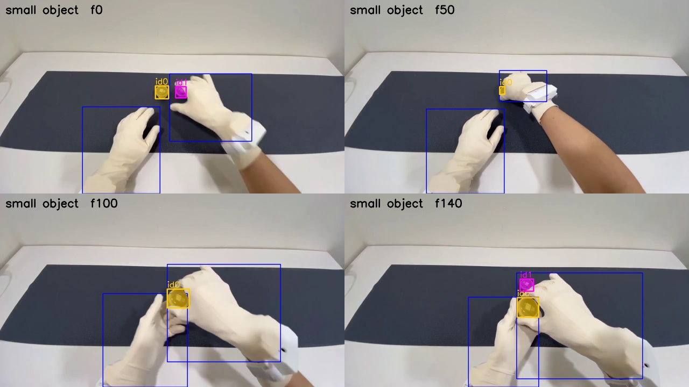
Prompt small object. Blue boxes are the hands from the hand prompt. Coloured masks are the objects SAM found.Prompt round container, the specific name, for reference.
small object gives almost the same result as the specific name. Its one extra id (id 2, frames 7 to 17) is a small false box near the right wrist.
Very generic words (object, item, held object) find nothing.
Hand masks and object masks are within 3 pixels of each other in 100% of frames before the tactile contact (98% for round container) and in 100% after it. Seen from the head, the hand covers the object long before it touches it.
Conclusion
small object is the first candidate for a generic object prompt.
2D overlap alone cannot tell touch from occlusion. The contact signal also needs co-movement: after a real grasp, the object moves with the hand.
EXP-03: Does the generic prompt hold on a large object? (spray bottle clip)
Date: 2026-10-27. Scripts: scripts/meta_smoke.py, scripts/sam_prompt_compare.py. Raw output: out/meta_smoke/ep53/. Meta API cost: $0.15 (5 calls of 150 frames).
Question
EXP-02 picked small object on a clip with small containers. Spray bottle tasks are about 20% of all frames, the bottle is large, and the background is a beige table close to the glove colour. Does small object still work there?
Setup
OpenGraph episode 53 (tuning split), frames 136 to 285, 5 seconds at 720p. The right hand reaches for a spray bottle on the table. The tactile glove says contact starts at clip frame 50. The head moves in this episode (see EXP-04).
Prompts: hand (for the hand masks), small object, handheld object, bottle, and the specific name spray bottle as a reference.
Results
Prompt
Frames with an object
Objects per frame
Ids (frames seen)
Boxes on a hand
Time
handheld object
0%
0
none
6.9 s
small object
100%
1.44
0 (150), 1 (66)
0%
16.9 s
bottle
100%
1.00
0 (150)
0%
14.9 s
spray bottle
100%
1.00
0 (150)
0%
17.2 s
hand found both gloved hands in all 150 frames (22.2 s).
Prompt small object. Id 0 (yellow) is the spray bottle in every frame. Id 1 (pink, left edge) is another object at the edge of the table.
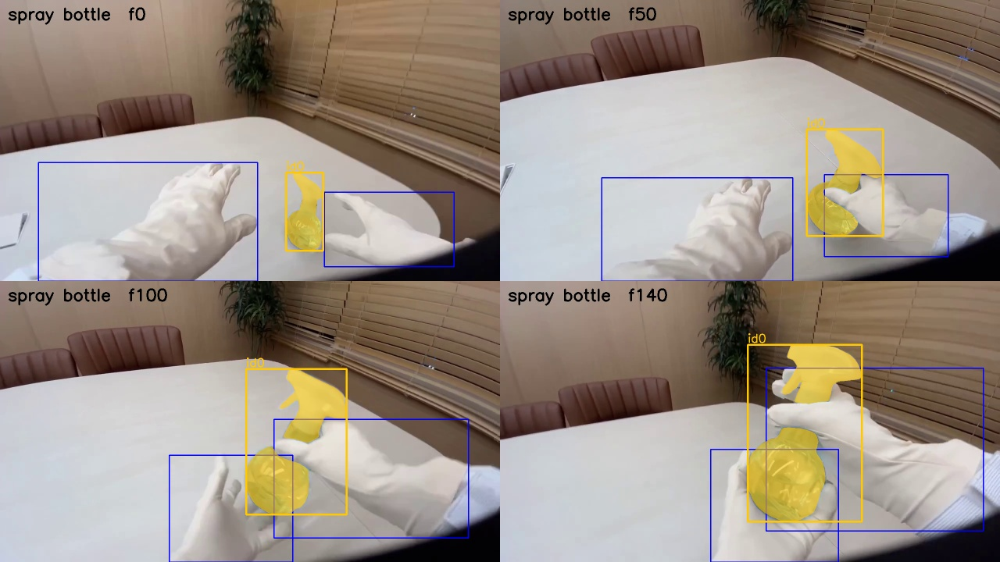
Prompt spray bottle, the specific name, for reference. The bottle mask is the same as with small object.
small object finds the large bottle in every frame, with the same mask as the specific name. It also picks up one background object (id 1, 66 frames).
handheld object finds nothing, like the other very generic words in EXP-02.
No prompt put a box on a glove, even on the beige table.
Right hand and object masks are within 3 pixels in 76% to 80% of frames before contact and 100% after. Better than the container clip, but still far from a usable contact signal on its own.
Conclusion
small object works on both a small and a large object. We use it as the single object prompt for OpenGraph.
Extra background objects are expected. The contact step keeps only the object that moves with a hand.
Cost check: one prompt over all OpenGraph frames is about $28 at 30 fps. With hand and small object, the full run is about $55, or about $18 at 10 fps if the 10 fps test in EXP-04 holds.
EXP-04: Cleaning OpenGraph without any API call
Date: 2026-10-27. Scripts: scripts/refine_check.py, scripts/refine_plots.py. Output: out/refine_check/summary.json, out/refine_check/per_episode.csv. Cost: $0. Everything here runs on the local CPU.
Question
Before we spend credit on SAM 3.1, what can the dataset itself tell us about label quality, ground truth, and camera motion?
1. The contact labels follow a thresholded tactile signal
OpenGraph labels which hand is in contact (annotation.hand). We compared this, frame by frame, with our own rule: a hand is touching when the sum of its 80 taxels is above a threshold.
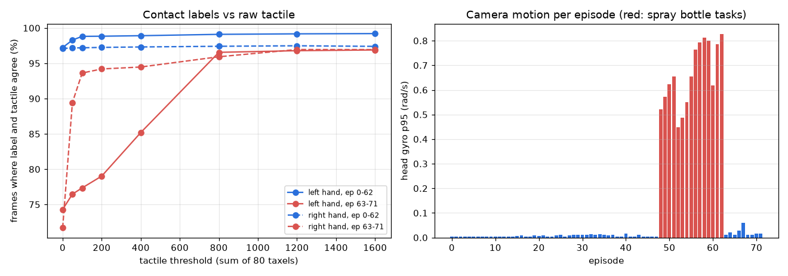
Left: agreement between labels and the tactile rule as the threshold rises. Right: head gyro p95 per episode.
With threshold 0 (any pressure), agreement is 97% for episodes 0 to 62 but only 72% to 74% for episodes 63 to 71. In those episodes the gloves read a small pressure at rest, so "any pressure" marks a hand as touching when it is not.
With threshold 800, agreement is 98.7% (left) and 97.2% (right) over all 138,629 frames, and 96.6% to 96.9% for episodes 63 to 71.
Contact onsets with threshold 800: for the right hand, 93.5% of label onsets have a tactile onset within 5 frames (median offset 0). For the left hand it is 79.6% (median offset 1 frame, tactile first).
Use for the project: we can build a second, independent ground truth for number 1 from the raw tactile data, but only with a threshold near 800 or a resting baseline per episode. Plain "any pressure" is wrong for 9 of 72 episodes.
2. No short blips to clean
There are 261 contact segments. None is shorter than 5 frames and no gap between two contacts is shorter than 5 frames. Segment length is 24 frames at p10, 246 at the median, and 978 at p90. The labels need no smoothing before we score boundaries with a 5 frame window.
3. Camera motion is known for free
The head IMU gyro splits the data into two groups. In episodes 0 to 47 and 63 to 71 the camera is almost still (p95 at most 0.06 rad/s). In the spray bottle episodes 48 to 62 the head moves (p95 0.45 to 0.83 rad/s).
Use for the project: the "camera stability" check, which we compute from the video only, can be tested against the IMU at no cost. It also means camera stability only varies inside the spray bottle group in OpenGraph.
4. Cheaper SAM input, not yet tested
SAM 3.1 is billed per frame. Sending clips at 10 fps instead of 30 fps would cut the OpenGraph bill from $27.73 to $9.24 per prompt. A 10 fps step is 0.1 s, which is inside the 0.167 s (5 frame) boundary window, and boundaries can be refined locally at 30 fps. This needs one paid test to check that tracking holds at 10 fps.
Other API free steps for later
HOT3D: pick contact clips from motion capture (hand to object distance) and drop frames that fail the dataset QA flags (434,452 of 480,375 pass). Only those clips go to SAM.
HOT3D: box2d_hands.csv has ground truth 2D hand boxes. It checks SAM hand boxes at no cost.
EXP-05: Can we send SAM 3.1 a 10 fps clip instead of 30 fps?
Date: 2026-10-27. Scripts: scripts/meta_smoke.py --step 3, scripts/sam_fps_compare.py. Raw output: out/meta_smoke/fps10/. Meta API cost: $0.04 (4 calls of 50 frames).
Question
SAM 3.1 video is billed per frame. If we keep every third frame, the same 5 seconds cost a third as much. Do the hand and object tracks stay the same?
Setup
The same two clips as EXP-02 and EXP-03:
ep1: OpenGraph episode 1, frames 270 to 419, two small containers, the right hand picks one up. Tactile contact at clip frame 51.
ep53: OpenGraph episode 53, frames 136 to 285, spray bottle, the head moves. Tactile contact at clip frame 50.
The 10 fps clip keeps clip frames 0, 3, 6, up to 147 (50 frames). Each 10 fps frame was checked against its 30 fps twin (pixel MSE 1.6 to 5.4, against 78 to 206 for the next frame), so frame k at 10 fps is frame 3k at 30 fps.
Prompts hand and small object. The 30 fps runs are the ones from EXP-02 and EXP-03, compared on the same 50 frames.
Mask IoU: for each 10 fps object id we take the 30 fps id that overlaps it most. A frame where only one of the two runs has the object counts as 0.
Results
Main tracks
Clip
Track
Frames found, 10 fps / 30 fps
Mask IoU mean
Mask IoU min
ep1
left hand
50 / 50
0.992
0.987
ep1
right hand
50 / 50
0.991
0.981
ep1
grasped container
50 / 50
0.974
0.940
ep53
left hand
50 / 50
0.990
0.975
ep53
right hand
50 / 50
0.978
0.770
ep53
spray bottle
50 / 50
0.983
0.968
All six tracks keep the same id in all 50 frames. The one low value (0.77, ep53 right hand, clip frame 15) is a single frame where the 10 fps mask reaches further right (box right edge at x = 1231 against 1111). The next frame is back at 0.98.
ep1. Top row 30 fps, bottom row 10 fps, same source frames. Blue: hand masks. Yellow: the grasped container (id 0). At frame 147 the second container is id 1 at 30 fps but id 3 at 10 fps.ep53. The spray bottle (id 0) and both hands look the same at both frame rates. Id 1 (pink, left edge) is the background object seen in EXP-03.
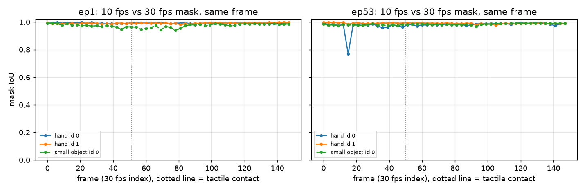
Mask IoU between the 10 fps and 30 fps results on the same frame, for the tracks that last the whole clip. Hand id 0 is the left hand in ep1 and the right hand in ep53. Small object id 0 is the grasped object in both.
Side tracks
ep1, second container: it is hidden under the right hand from about clip frame 7 to 101. At 30 fps it comes back with its old id. At 10 fps it comes back as a new id (id 2 for one frame, then id 3). In the 14 frames where both runs see it, the masks agree (median IoU 0.97).
ep1, false box near the right wrist (the id 2 from EXP-02): present at both frame rates in the same frames (clip frames 9 to 15). At 10 fps the id 2 label is later reused for the returning container and a tiny box.
ep1: two tiny extra boxes (about 21 x 6 pixels) in the last two 10 fps frames, not in the 30 fps run.
ep53, background object: 21 frames at 10 fps against 22 at 30 fps, mean IoU 0.89.
Contact cue and speed
ep1 10 fps
ep1 30 fps
ep53 10 fps
ep53 30 fps
Right hand within 3 px of an object, before contact
94%
100%
82%
82%
Same, after contact
100%
100%
100%
100%
hand stream time
9.5 s
22.4 s
9.4 s
22.2 s
small object stream time
5.7 s
9.6 s
5.9 s
16.9 s
hand raw output
0.71 MB
2.28 MB
0.87 MB
2.57 MB
The 30 fps columns use the same 50 frames. The one ep1 difference before contact is a single frame where the 30 fps run still had a thin sliver of the second container next to the hand.
Conclusion
At 10 fps, SAM 3.1 gives the same hand and grasped-object tracks as at 30 fps: same ids, mask IoU 0.97 to 0.99. We will send 10 fps clips.
What we lose: an object that stays hidden for about 3 seconds may come back with a new id. The contact step only needs the object that moves with the hand, so this does not change it. If we need one id per object, we can join tracks by position after the gap.
Contact timing is measured at 30 fps, so a 10 fps signal has a step of 3 frames (0.1 s). That is inside the ±5 frame target, but it uses up to a third of it. Muse Spark boundary checks can still look at the 30 fps frames around each boundary.
Cost: one prompt over all OpenGraph frames drops from about $27.7 to $9.2. hand plus small object drops from about $55 to about $18. It is also 2 to 3 times faster and gives a third of the raw output.
EXP-06: Contact cutting pilot on three whole episodes
Note, 2026-10-27: the logistic regression tested here is now an appendix. The compared arms for number 1 are set in the measurement plan: Muse Spark alone, a SAM rule (overlap plus co-movement), and the SAM rule plus a Muse Spark boundary check. The main ground truth is the cleaned glove (tactile sum above 800, flicker under 0.1 s removed, EXP-14). The contact images on this page were redrawn on 2026-10-27 with the model trained on that ground truth. The tables are from the original run on labels and raw glove.
Date: 2026-10-27. Scripts: scripts/sam_episodes.py, scripts/sam_fast.py, scripts/sam_track_check.py, scripts/contact_cut.py. Raw output: out/sam10/, out/contact/. Meta API cost: $1.15 (6 calls, 5,762 frames).
Question
Before we send all 50 tuning episodes, does SAM 3.1 keep its tracks over a whole episode (1 to 2.5 minutes), and does our contact pipeline run end to end and give a first signal?
Setup
Three tuning episodes with different tasks:
ep0: 146 s, moving small black and white discs between clear containers. The right hand touches 48 times.
ep30: 68 s, orange cardboard box.
ep53: 74 s, spray bottle, the head moves.
Each whole episode goes to SAM 3.1 as one 10 fps clip (EXP-05), once with hand and once with small object. SAM takes up to 15,000 frames per request. Our longest episode has 1,457 frames at 10 fps.
Masks are decoded with sam_fast.py. It runs the same decoder as the official meta-sam-parser, compiled with numba. On 345 masks the result was bit for bit the same, at about 3 ms per mask instead of 400 ms.
Contact model (contact_cut.py), per 10 fps frame and hand:
13 features: the gap between the hand mask and the nearest object mask, the share of that object next to the hand, object motion with camera motion removed, whether object and hand move together, hand motion, visible object area, number of objects.
The same features from 6 frames before to 6 frames after are added as context.
A logistic regression gives a contact probability. Smoothing and two thresholds turn it into segments, which go back to 30 fps.
Baseline rule: contact when the hand mask is within 3 px of an object mask.
Scoring: leave one episode out (train on two, test on the third). Ground truth is the dataset label, with tactile sum above 800 as a check.
Boundary F1 at ±5 frames (0.167 s) and ±15 frames (0.5 s). Starts and ends are matched one to one, only to the same kind.
Contact IoU over all frames.
Results
SAM over whole episodes
ep0
ep30
ep53
Request time (hand / small object)
77 s / 83 s
44 s / 44 s
48 s / 49 s
Raw output, both prompts, gzip
127 MB
94 MB
81 MB
Frames with a hand
99.4%
99.0%
100%
Hand ids
2
2
3 (one lives 6 frames)
Objects per frame, mean / max
6.9 / 12
2.3 / 4
1.6 / 3
Object ids
16
4
5
Left hand found in left-contact frames
100%
100%
96.7%
Right hand found in right-contact frames
98.3%
97.2%
100%
All six requests ran in parallel in 93 seconds. The two hand ids last the whole episode in all three cases.
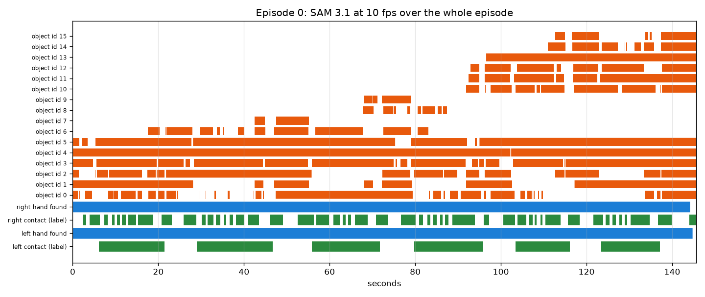
Episode 0. Blue: SAM found the hand. Green: the hand is in contact (label). Orange: object ids from small object. The scene has many discs and containers, so SAM uses 16 object ids, up to 12 in one frame. The limit is 16.
One thing had to be fixed first. Our first rule called a hand id left or right from its median position in the image. Hands cross the image centre often. In ep53 the left hand spends 56% of its frames right of the centre, so it was called the right hand. We now use frames that show both hands: the id that is more often the left one of the pair is the left hand. The table above uses the fixed rule.
First contact numbers (3 episodes only)
Method
Ground truth
Boundary F1 ±5
Boundary F1 ±15
Contact IoU
Rule, gap ≤ 3 px
label
0.00
0.07
0.74
Logistic regression
label
0.18
0.31
0.64
Rule, gap ≤ 3 px
tactile
0.01
0.07
0.75
Logistic regression
tactile
0.16
0.30
0.64
The rule has a higher IoU because it marks long blocks of "contact". The hand is next to some object most of the time. But it finds almost no boundaries.
Without any shift, our starts come 6 frames (0.2 s) before the label starts (median). Ends have no delay (median 0). That means the hand looks like it touches before the glove feels pressure. The pipeline now moves starts by the median delay seen in the training episodes.
How well single frames are separated (ROC AUC of the model probability, each episode left out):
ep0
ep30
ep53
Left hand
0.93
0.70
0.91
Right hand
0.59
0.65
0.92
Episode 53, model trained on ep0 and ep30. Blue line: contact probability. Green: label contact. Grey: tactile above 800. Orange: predicted contact. The long holds are found. The short releases at 9 s and 13 s are missed, and the ends come 1 to 3 s late, while the hands are still next to the bottle.Episode 0. The left hand holds a container in six long blocks, and the probability follows them. The right hand picks up small discs 48 times. It never leaves the area next to the containers, so the probability cannot separate touch from no touch.
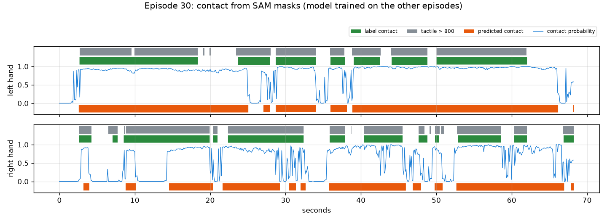
Episode 30, cardboard box. Long contacts are found. Short gaps where the hand rests on the box without pressure are often called contact.
Conclusion
SAM 3.1 handles whole episodes at 10 fps. Hand ids last the whole episode, and each hand is found in 97% to 100% of its contact frames. We can send one request per episode.
Cost and time are as planned: $0.20 per 1,000 frames, about 1 minute per request, about 100 MB of raw output per episode.
The pipeline runs end to end. Large held objects are separated well from single frames (AUC 0.91 to 0.93). Quick pinches of small objects next to a container are not (AUC 0.59).
Boundary F1 is low (0.18 at ±5 frames). This model was trained on only two episodes, so the number is not the final answer. It does show that masks alone will not place boundaries within ±5 frames. The Muse Spark boundary check in the plan is needed.
Visible contact starts about 0.2 s before glove pressure. This is the delay the plan asked us to measure, but it comes from three episodes only.
Note: the two thresholds were picked on the same out-of-fold probabilities that were scored, so these numbers are slightly optimistic.
EXP-07: How many grasp clips does HOT3D give, and what will number 2 cost?
Note, 2026-10-27: this page counts clips for pricing only. The clip set used for number 2 is the one cut from hand to object distance in EXP-11: 400 tuning clips for the weights and all 1,426 held-out clips for the AUC. See the measurement plan.
Date: 2026-10-27. Script: scripts/hot3d_clip_count.py. Raw output: out/hot3d_clips/events.csv, summary.json. Meta API cost: $0.
Question
Number 2 sends HOT3D grasp clips to SAM 3.1 and Muse Spark. Sending every frame of the 136 sequences that have ground truth would cost about $96 per SAM prompt, so we only send clips around grasps. How many clips are there, how long are they, and what do they cost?
Setup
All 136 Aria sequences with hand and object pose ground truth (85 tuning, 51 held-out, 480,375 RGB frames). Motion capture only, no video.
HOT3D objects move only when a hand moves them. Per object, at the RGB frame times (30 fps):
speed = position change over 0.2 s. A resting object reads about 0.0003 m/s, a carried one 0.2 to 1 m/s. Moving means above 0.03 m/s.
Moves less than 0.5 s apart are joined. Moves shorter than 0.3 s, or that end less than 3 cm from where they began, are dropped.
One move is one grasp event. Its clip adds 1 s before (reach) and 1 s after (release).
Two checks per event: a MANO wrist comes within 0.25 m of the object, and at least 90% of the clip frames pass the dataset QA mask.
SAM price: $0.20 per 1,000 frames, at least 50 frames per request, 10 fps (EXP-05), two prompts (hand and object).
This count is for pricing only. The clips for number 2 will be cut on Day 5 from the distance between the hand and the object.
Results
Tuning
Held-out
All
Sequences
85
51
136
Grasp events (object moves)
1,709
915
2,624
Wrist within 0.25 m
1,581
871
2,452
Wrist near and clip passes QA
1,439
713
2,152
Move length, median
2.3 s
3.5 s
2.7 s
Clip length, median / 90th percentile
4.3 / 10.3 s
5.5 / 11.7 s
4.6 / 10.9 s
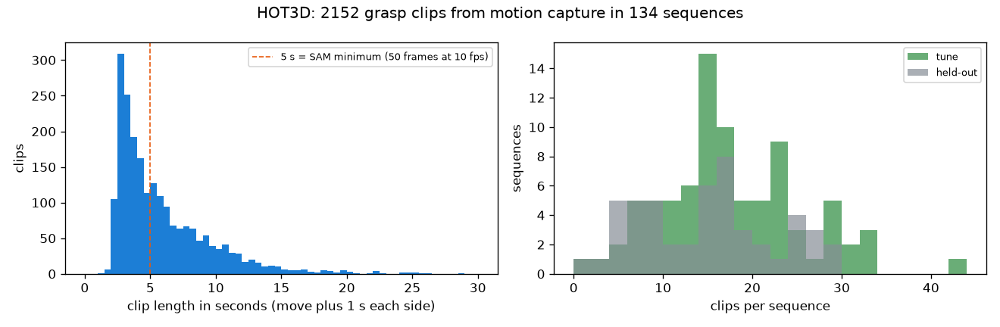
Left: clip lengths. 53% of clips are shorter than 5 s, so SAM bills them as 50 frames. Right: clips per sequence. Two sequences have no usable clip.
93% of moving objects have a wrist within 0.25 m, so object motion is a good grasp detector. The most moved objects are the white mug (164 events), a puzzle toy, a coffee pot and a cellphone.
SAM cost for the 2,152 clips
Option
Requests
Billed frames
Cost
Every frame of all 136 sequences, 30 fps, 2 prompts
272
960,750
$192
One request per clip, 30 fps
4,304
766,080
$153
One request per clip, 10 fps
4,304
293,156
$59
Overlapping clips joined, 10 fps
1,452
220,812
$44
All 713 held-out clips plus 400 random tuning clips, 10 fps
2,226
158,070
$32
Conclusion
HOT3D gives about 2,150 usable grasp clips, a median of 4.6 s each.
Sending all of them to SAM at 10 fps costs about $59, or $44 if overlapping clips are joined. Muse Spark on every clip adds about $50 (estimate, see below). Together that is too much next to the rest of the plan.
We do not need every tuning clip. The score is a logistic regression with 7 inputs, so a few hundred tuning clips are enough. The held-out clips are where the AUC and its confidence interval come from, so we keep all 713.
Plan: all held-out clips plus 400 random tuning clips (seed 20261026), about $32 for SAM.
Muse Spark estimate: two calls per clip (the two checklist items together, then the checklist-free baseline), 6 frames each, frames resized to 720 px (about 1,100 tokens each, measured in EXP-01 on OpenGraph frames). That is about $0.024 per clip, or about $27 for 1,113 clips. Token counts at HOT3D resolution are not measured yet.
EXP-08: Which image orientation does the HOT3D calibration use?
Date: 2026-10-27. Script: scripts/hot3d_calib_check.py. Raw output: out/hot3d_calib/report.json. Meta API cost: $0.
Question
Number 2 projects mocap hands and objects into the HOT3D video. We use preview_rgb.mp4, which is upright. Raw Aria images are rotated 90 degrees. The camera calibration in ground_truth/camera_models.json (FISHEYE624) and the dataset 2D boxes may belong to either orientation. If we guess wrong, every projection in number 2 lands in the wrong place.
Setup
Three sequences from three people: P0001_10a27bf7 (held-out), P0002_016222d1 and P0011_72efb935 (tuning).
Check 1, calibration against the dataset 2D object boxes:
For 25 frames per sequence, project each object's 3D model (from assets/*.glb) with the mocap poses: object to world, world to headset, headset to RGB camera, then the FISHEYE624 lens model.
Compare the bounding box of the projected points with the box in box2d_objects.csv (stream 214-1, visibility above 0.6), as projected and after a 90 degree turn either way.
Check 2, against the video itself (independent of the dataset boxes):
Run MediaPipe Hands on 150 preview frames per sequence. HOT3D hands are bare, so MediaPipe works here.
Compare its hand boxes with the dataset hand boxes (box2d_hands.csv) for each orientation and for frame offsets from -2 to +2. The video has one frame fewer than the RGB timestamps, so the time match needs checking too.
Check 3, by eye: projected models drawn on the video frame.
Results
Check 1: projection against dataset object boxes (mean IoU)
Sequence
Boxes
As projected
Turned 90° clockwise
Turned 90° counter-clockwise
P0001_10a27bf7
68
0.86
0.00
0.00
P0002_016222d1
116
0.98
0.02
0.02
P0011_72efb935
111
0.95
0.01
0.01
The calibration and the dataset boxes agree with each other, so our projection code (poses and lens model) is right. This check alone does not say which orientation the video uses.
Check 2: MediaPipe on the video against dataset hand boxes (mean IoU)
Sequence
As given, offset 0
Counter-clockwise, offset 0
Clockwise, offset -1
Clockwise, offset 0
Clockwise, offset +1
P0001_10a27bf7
0.01
0.00
0.41
0.43
0.42
P0002_016222d1
0.03
0.00
0.43
0.45
0.44
P0011_72efb935
0.00
0.00
0.37
0.38
0.38
The IoU tops out near 0.4 because a MediaPipe box only spans the 21 hand landmarks, while the dataset box covers the whole visible hand. What matters is where the peak is: clockwise, offset 0, in all three sequences.
Check 3: by eye
P0002_016222d1. Green: dataset object boxes as given. Orange: projected 3D models. Only the clockwise panel puts the models on the real spatula and plate on the table. The given boxes sit up near the monitor, in the wrong place.
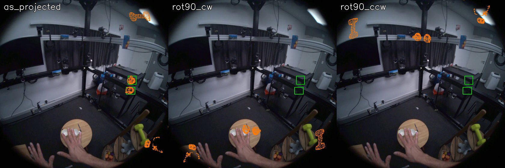
P0001_10a27bf7. Clockwise puts the mug under the right hand and the dumbbell on the green dumbbell.
Conclusion
The calibration and the dataset 2D boxes (box2d_objects.csv, box2d_hands.csv) are in the raw Aria orientation. The preview video is that image turned 90 degrees clockwise.
To use them with the preview video, map a raw pixel (u, v) to (1407 - v, u). The same holds for every projected mocap point.
Preview frame k matches the k-th RGB timestamp (stream 214-1). The one missing video frame is at the end.
This closes open issue 1 in the plan. Mocap hands and objects can now be drawn on the clips we will send to SAM, and SAM boxes can be checked against the dataset boxes after the same turn.
EXP-09: Fingertip 3D positions from UmeTrack, without MANO
Date: 2026-10-27. Script: scripts/hot3d_hands.py. Raw output: out/hot3d_hands/report.json, tip_distances.csv. Meta API cost: $0.
Question
The copyable label in number 2 needs 3D fingertip positions next to the object. HOT3D gives hands in two formats. MANO needs a separate model file that requires registration on the MANO website. UmeTrack ships inside HOT3D. Can we get fingertips from UmeTrack alone?
Setup
hand_data/umetrack_hand_user_profile.json holds a full kinematic hand model per person: 22 joints (rest positions in mm, rotation axes, parents), 21 landmarks bound to bones, and a 788 vertex skinned mesh.
umetrack_hand_pose_trajectory.jsonl holds, per timestamp and hand, 22 joint angles and the wrist pose in the world frame.
We wrote the forward kinematics: each joint turns by its angle about its axis through its rest position, on top of its parent, and each landmark moves with its bone. Landmarks 0 to 4 are the five fingertips.
The profile describes one hand. The other hand is its mirror image, and we did not know which hand or which axis. We tried all four options per hand (no mirror, or mirror along x, y or z).
Check 1: project the 21 landmarks into the raw image (lens model from EXP-08) and count how many fall inside the dataset hand box (box2d_hands.csv, hands at least 90% visible, box padded by 5%). 120 frames per sequence.
Check 2: draw the skeleton on the preview video (turned as in EXP-08).
Check 3: for each grasp event from EXP-07 in these sequences, the distance from the closest fingertip to the object surface (20,000 points sampled on the 3D model), in the middle of the move and 1.5 s before it starts.
Hand 1 only fits when mirrored along x. So the profile is hand 0 as it is, and hand 1 is its x mirror. (For hand 0, mirror z also stays inside the box, because a box cannot tell a hand from its mirror image. But a real profile must fit one hand without mirroring, and hand 1 rules that out.)
Check 2: skeleton on the video
P0001_10a27bf7. Blue: hand 0. Orange: hand 1. Red dots: fingertips. The skeletons sit on the real hands, holding the dumbbell, the phone and the mug. Hand 0 is the left hand and hand 1 is the right hand.
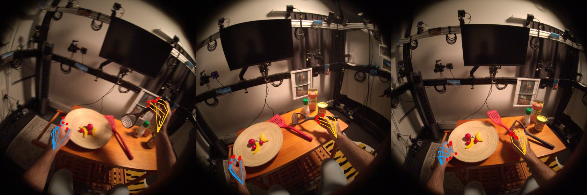
P0002_016222d1. The right hand fingertips close around the potato masher handle.
Check 3: fingertip to object distance
Grasp events
Closest fingertip, median
90th percentile
Within 15 mm
2 or more fingertips within 15 mm
Middle of the move
65
2.3 mm
6.0 mm
97%
95%
1.5 s before the move
60
265 mm
601 mm
5%
5%
While an object moves, fingertips sit a few millimetres from its surface. Before the move, the hand is far away. This is the signal the copyable label is built on.
Conclusion
UmeTrack alone gives 21 hand landmarks with fingertips in 3D, in the same world frame as the objects. We do not need MANO and nobody needs to register for it.
Hand 0 is the left hand and uses the profile as it is. Hand 1 is the right hand and is the profile mirrored along x.
Fingertip to surface distances are accurate to a few millimetres during grasps, which is fine enough for the copyable rule ("thumb and at least one other finger near the surface, none deep inside").
Next: send these landmarks to dex-retargeting (Allegro hand) and measure the Allegro fingertips against the object surface. That gives the copyable label, and then the label skew check on the tuning set (plan, risk 1).
EXP-10: Copyable labels from Allegro retargeting, and the label skew check
Date: 2026-10-27. Script: scripts/hot3d_copyable.py. Raw output: out/hot3d_copyable/tune_events.csv, tune_sd.npy, tune_report.json. Meta API cost: $0.
Question
Number 2 needs a ground truth: can a robot hand copy this human grasp? The plan defines it with an Allegro hand. The biggest known risk was label skew. The Allegro hand is larger than a human hand, so a strict rule could call almost nothing copyable, and a loose rule almost everything. The plan asks for a copyable share between 20% and 80% on the tuning split. Does our label land there, and how much does it depend on the thresholds?
Setup
Grasps: the EXP-07 events in the 85 tuning sequences (wrist near the object, clip passes QA). 1,422 of 1,439 had hand poses at the contact frame. Contact frame = the middle of the object move.
Hand: the one whose fingertips are closest to the object. Landmarks from UmeTrack (EXP-09), put in MediaPipe order.
Retargeting: dex-retargeting 0.4.6, the Allegro vector config for that hand (allegro_hand_right or allegro_hand_left). It matches the four wrist-to-fingertip vectors, using the same wrist frame as the dex-retargeting MediaPipe example. We turned off the low pass filter and reset the solver per grasp, because every grasp is a single frame.
Size factor: Allegro wrist-to-index-tip length (0.247 m) over the person's own (from the UmeTrack profile). Median 1.26. The default 1.6 in the config is tuned for MediaPipe input, not metric mocap.
Placement: the Allegro wrist sits at the human wrist, turned by the same wrist frame. Every Allegro link point then goes into the object frame.
Signed distance to the object surface: nearest of 30,000 points sampled on the 3D model, negative when the point is behind the surface normal (inside).
Rule, per grasp: copyable if, for some wrist shift up to R (1 cm grid):
the Allegro thumb tip is within near of the surface (and not deeper than deep),
at least one other Allegro fingertip is too,
and no Allegro link point is deeper than deep inside the object.
Sanity check on the same frames: the human rule (thumb and one more human fingertip within 15 mm) holds for 89.5% of grasps.
Results
Retargeting reaches the target vectors with a median error of 4.3%.
Copyable share over thresholds (tuning split, 1,422 grasps)
near
deep
Wrist fixed
Shift up to 2 cm
Shift up to 4 cm
1.0 cm
1 cm
9.4%
33.5%
45.9%
1.5 cm
0.5 cm
19.7%
53.3%
66.8%
1.5 cm
1 cm
20.7%
54.4%
66.9%
1.5 cm
2 cm
21.6%
55.2%
67.1%
2.0 cm
1 cm
39.0%
75.7%
86.6%
3.0 cm
1 cm
69.1%
94.4%
97.4%
Copyable share as the near threshold grows, for three wrist shift limits. Yellow: the 20% to 80% band from the plan.
The near threshold and the wrist shift decide the share. The deep limit barely matters: with the wrist fixed, only 4.1% of grasps have any Allegro link more than 1 cm inside the object.
With the wrist fixed, the median Allegro thumb tip is 11 mm from the surface and the closest other fingertip 19 mm.
Chosen rule
near 1.5 cm (the same distance as the human fingertip check in EXP-09), deep 1 cm, wrist shift up to 2 cm. Copyable share: 54.4%. The share stays inside the band for any near value from 0.75 cm to 2.0 cm at this shift, so the label is not sitting on an edge. From here on these thresholds are fixed.
Who and what is copyable (chosen rule)
Person
P0002
P0003
P0009
P0011
P0014
P0015
Grasps
147
122
427
326
147
253
Copyable
29%
38%
76%
48%
35%
60%
Lowest objects (at least 25 grasps)
Copyable
Highest objects
Copyable
can_tomato_sauce
26%
flask
94%
can_soup
27%
bowl
93%
mouse
28%
vase
84%
bottle_ranch
31%
plate_bamboo
82%
potato_masher
34%
mug_patterned
78%
Left hand 50%, right hand 57%.
Four tuning grasps. Green: object model. White: human hand landmarks. Orange: Allegro link points, red: Allegro fingertips, after the wrist shift. Left two: copyable (coffee pot). Right two: not copyable (whiteboard marker, parmesan can).
Conclusion
The label pipeline runs end to end without any paid call: mocap hand, UmeTrack landmarks, Allegro retargeting, signed distance to the object model.
Label skew is not a problem with the chosen rule: 54% copyable on the tuning split, and a wide range of thresholds stays inside 20% to 80%.
But the share is set mostly by the near threshold. So the label is a graded "how close do the Allegro fingertips come" turned into yes or no. This is the definition from the plan. We report it with the threshold curve, not as a single number.
The label varies a lot by object (26% to 94%) and by person (29% to 76%). That gives number 2 something to predict. It also means the held-out persons may have a different share. AUC does not depend on the share.
Limits:
Allegro points are link frames, not finger surfaces.
The inside or outside sign comes from the nearest sampled surface normal, which can be wrong at thin edges.
Each grasp is judged on one frame.
Next: compute the same labels for the held-out persons with these fixed thresholds, cut the number 2 clips, and run the free checklist items (camera stability, MediaPipe retargeting) on them.
EXP-11: Number 2 clips cut from hand to object distance, with held-out labels
Date: 2026-10-27. Scripts: scripts/hot3d_clips.py, scripts/hot3d_copyable.py. Raw output: out/hot3d_clips/clips.csv, clips_labeled.csv, out/hot3d_copyable/. Meta API cost: $0.
Question
With the copyable rule fixed on the tuning split (EXP-10), what share of held-out grasps is copyable?
The plan says number 2 clips must be cut from mocap hand to object distance, not from our own video pipeline, so that cutting errors do not mix into the score check. What clips does that give, and what labels?
Setup
Held-out labels: the EXP-10 pipeline and rule, unchanged (near 1.5 cm, deep 1 cm, wrist shift up to 2 cm), on the 713 held-out EXP-07 grasps.
Clips (all 136 sequences, every 30 fps RGB frame):
Per hand and object, a frame is in contact when at least two UmeTrack fingertips are within 15 mm of the object surface.
Contact frames are joined across gaps up to 0.5 s and kept if they last at least 0.3 s.
The clip runs from 1 s before the contact (reach) to 1 s after it (release).
We keep clips where the object travels at least 3 cm (a real pick, not a brush) and at least 90% of the clip frames pass the dataset QA mask.
The copyable label is judged at the middle of the contact, for the hand of that clip.
Fingertip distances use forward kinematics on all frames at once. All 136 sequences take 17 seconds on 12 processes.
Results
1. Held-out labels on the EXP-07 grasps
Split
Grasps
Copyable
Human rule check
By person
Tuning
1,422
54.4%
89.5%
29% to 76%
Held-out
707
52.6%
90.0%
P0001 30%, P0010 47%, P0012 73%
The held-out share is close to the tuning share, and inside 20% to 80%.
2. Clips from hand to object distance
Tuning
Held-out
Contacts (per hand)
2,987
1,858
Object moved at least 3 cm
2,656
1,750
Moved and clip passes QA
2,433
1,449
Labelled (hand pose at the contact frame)
2,385
1,426
Contact length, median
2.2 s
2.2 s
Clip length, median / 90th percentile
4.2 / 9.7 s
4.2 / 8.9 s
Both hands on the object for most of the contact
29.5%
33.5%
Copyable
53.3%
51.7%
There are more clips than EXP-07 grasps because a clip belongs to one hand. When both hands hold an object, that gives two clips. A put-down and a re-grasp also give two.
Lowest and highest objects (at least 40 clips): parmesan can 27%, soup can 29%, potato masher 32%, tomato sauce can 33%, milk carton 34%, against patterned mug 73%, bowl 75%, white mug 75%, bamboo plate 77%, dino toy 79%.
P0002_016222d1 (tuning). Top: distance from the potato masher to the second closest fingertip of each hand. Contact is below the dashed 15 mm line. Bottom: every clip in the sequence, coloured by its copyable label.
SAM cost for these clips (10 fps, 2 prompts)
Set
One request per clip
Overlapping clips joined
All 1,426 held-out clips
$34.97
$17.76 (198 requests)
400 random tuning clips (seed 20261026)
$10.04
$8.82 (315 requests)
Joining overlapping clips into one request costs half as much. SAM tracks every hand and object in the window, and each clip takes its own frames out of the result.
Conclusion
Number 2 now has its clip list and its ground truth, made from mocap only: 2,385 tuning and 1,426 held-out clips, about 52% to 53% copyable in both splits.
The held-out share (52.6% on EXP-07 grasps, 51.7% on clips) is close to tuning, so the fixed rule carries over. The person to person spread stays large (30% to 73% in held-out).
About a third of clips are two-handed. The copyable label is per hand.
Planned SAM spend for number 2: about $27 (all held-out clips plus 400 tuning clips, overlapping clips joined). Muse Spark still runs per clip: 1,826 clips at about $0.024 is about $44. Running Muse on a random half of the held-out clips would bring that to about $27. To be decided when the credit arrives.
EXP-12: Do the free checklist items predict copyable? And how far does object identity go?
Date: 2026-10-27. Scripts: scripts/hot3d_local_checks.py, scripts/hot3d_signal_check.py. Raw output: out/hot3d_checks/clip_checks.csv, summary.json, signal_check.json. Meta API cost: $0.
Question
Number 2 compares our score with Muse Spark asked the same question with no checklist (see the measurement plan). The copyable share differs a lot by object (26% to 94%), so a model that only recognises the object may already do well. Before we spend credit:
Do the three checklist items that need no API call carry any signal for copyable?
How well does object identity alone predict copyable?
Only tuning clips are used. Held-out clips are not looked at.
Setup
Clips: the EXP-11 set, 2,385 tuning clips (53.3% copyable), and the held-out clips for the values only.
Video pass, once per sequence, every 3rd frame (10 fps), on the raw fisheye preview:
camera motion: corners tracked between frames, a similarity transform fitted with RANSAC,
MediaPipe Hands, with the left and right labels flipped for a non-mirrored view.
Three checks per clip, video only:
camera stability: 90th percentile of camera motion in the clip,
retargeting recoverability: MediaPipe world landmarks of the clip's hand through dex-retargeting (Allegro) during the contact, as hand found share times (1 - vector error),
action completeness: the hand is seen and moves in the second before contact (reach) and in the second after it (release).
Grades 1, 0.5, 0. Cut points for camera and retargeting are the tuning terciles, now fixed. Completeness has a fixed rule.
Mocap checks of the checks themselves (not inputs): camera motion against headset rotation, and MediaPipe hand labels against the mocap hand nearest in the image (EXP-08 projection).
Models, leave one tuning person out (6 folds):
object-only reference: each object's copyable share in the other five people, given to the left-out person's clips,
the three grades in a logistic regression,
object share plus the three grades.
Results
The checks measure what they should
Check of the check
Result
Camera motion vs headset rotation from mocap, per clip (Spearman)
0.93
MediaPipe hand label matches the mocap hand
1,197 of 1,241 (96.5%)
Clip hand found by MediaPipe during contact, median
87%
Retargeting vector error, median
10%
But they do not predict copyable
Signal
AUC on tuning clips
Camera stability grade
0.533
Retargeting recoverability grade
0.494
Action completeness grade
0.515
Same three, inside each object (weighted mean)
0.517 / 0.529 / 0.530
Three grades in a logistic regression, leave one person out, mean of 6 people
0.534
Object-only reference, leave one person out, mean of 6 people
0.698 (0.59 to 0.81 by person)
Object share plus the three grades
0.693
Grey: the three free checks, alone and together. Blue: object identity alone, and with the three checks. The checks add nothing to object identity.
A trap in pooled AUC
When the six left-out people are pooled into one AUC, the numbers drop: 0.616 for the object-only reference, and 0.365 for the three grades, below chance. The reason is the people, not the checks. Their copyable share runs from 29% to 74%, and a model trained without a high-share person gives that person's clips low scores. Pooling then ranks people instead of clips. Held-out has the same problem (30%, 47% and 73% by person). So the held-out AUC must be reported per person as well as pooled.
Conclusion
The three free checks work as measurements: camera motion agrees with the headset (0.93), and MediaPipe finds the right hand 96.5% of the time.
They carry no information about copyable (AUC 0.49 to 0.53, also inside each object). These checks describe how good the video is. The copyable label describes whether the Allegro hand fits the grasp. Those are different questions.
Object identity alone reaches AUC 0.70 (mean over people). If Muse Spark recognises the object, it should land near there. Our score, as planned, would then lose the main comparison of number 2 unless the two Muse Spark checks (finger occlusion, object property) carry this signal.
What to do before spending credit:
make retargeting recoverability measure what the proposal says, whether the hand shape fits a robot hand. Candidate video-only features: hand opening, finger curl and grasp type from MediaPipe, and later object size against hand size from SAM masks. They can be tested for free on these tuning clips, like here.
report the plug-in comparison (Muse Spark alone vs Muse Spark plus our checks) next to the main one, as the measurement plan says.
keep per-person AUC next to pooled AUC.
Limits: MediaPipe runs on the raw fisheye image. Grades use tercile cut points, which hide small effects but not an AUC this close to 0.5.
EXP-13: Hand shape during contact as the retargeting check
Date: 2026-10-27. Script: scripts/hot3d_hand_shape.py. Raw output: out/hot3d_checks/hand_shape.csv, hand_shape.json. Meta API cost: $0.
Question
EXP-12 showed that the three free checks measure the video well but do not predict copyable (AUC about 0.5), while object identity alone reaches 0.70. The proposal describes the retargeting check as "whether the hand shape fits a robot hand". Do hand shape features from the video predict copyable, and do they add anything to object identity?
Setup
2,385 tuning clips (EXP-11). 54 clips where MediaPipe never found the clip's hand during contact are left out, so 2,331 remain (53.4% copyable). Held-out clips are not used.
Ten features per clip, the median over the contact frames at 10 fps, from 21 hand points:
opening: thumb tip to index tip, and thumb tip to middle tip, over hand size (wrist to middle finger base),
curl of each of the five fingers: 1 - (base to tip) / (length along the joints),
spread: angle between the index and little finger directions,
closure: mean fingertip distance to the palm centre, over hand size,
pinch vs power: index curl minus the mean curl of ring and little finger.
Two sources for the same features:
video: MediaPipe world landmarks, the check we can actually use,
mocap: UmeTrack landmarks, an upper bound for what hand shape could tell with a perfect hand tracker. It is never an input to our score.
Models: logistic regression, leave one tuning person out, AUC per person and the mean over the six people (EXP-12 explains why pooled AUC misleads). "Within object" is the AUC inside each object, weighted by clip count.
Results
Single features (tuning clips, AUC for copyable)
Feature
Video
Mocap
Opening, thumb to index
0.37
0.37
Opening, thumb to middle
0.39
0.38
Closure
0.39
0.35
Curl, middle / ring
0.59 / 0.59
0.62 / 0.63
Spread
0.54
0.61
Pinch vs power
0.51
0.49
An AUC below 0.5 means the relation is reversed: a wider hand opening goes with not copyable. Video and mocap agree on the direction and size.
Models, leave one person out
Model
AUC, mean of 6 people
Range over people
Within object
Object-only reference
0.693
0.59 to 0.81
Video hand shape
0.632
0.56 to 0.71
0.48
Video hand shape + object
0.722
0.62 to 0.84
0.42
Mocap hand shape (upper bound)
0.671
0.58 to 0.74
0.56
Mocap hand shape + object
0.729
0.63 to 0.82
0.51
Left: model AUCs. Right: the thumb to middle fingertip opening during contact. Not copyable grasps (dashed) are more open, from video and from mocap alike.
What this means
Hand shape from video does predict copyable (0.63), unlike the EXP-12 checks. The video version gets most of what perfect mocap hand shape gets (0.67).
It works mainly as a stand-in for object size. A wide opening means a big object, and big objects (cans, cartons) are less often copyable. Inside one object, video hand shape does not separate copyable from not copyable (0.48).
It is still below object identity (0.63 against 0.69). Combined, the two reach 0.72, so hand shape adds about 0.03 on top of knowing the object.
For number 2 this means:
Our score with this check should beat the free checks but may still lose to Muse Spark alone, if Muse Spark knows the object well.
The plug-in comparison (Muse Spark alone vs Muse Spark plus our checks) is where we can show a gain. On tuning, object plus hand shape beats object alone by about 0.03 AUC.
Decision for the checklist: the retargeting recoverability check becomes "hand shape fit". It is the logistic regression on the ten video features, graded by tuning terciles. It is trained on tuning clips that are not in the 400 clips used for the final score weights, so the two models do not share training data.
Limits: MediaPipe runs on the raw fisheye image. The within-object AUC of the combined video model is below 0.5 (0.42). Across objects, a closed hand means copyable. Inside an object the link is weak and slightly reversed, so the model should not be read as "close your hand to be copyable".
EXP-14: Arm B (SAM rule) and the reference rows on the three pilot episodes
Date: 2026-10-27. Script: scripts/contact_cut.py rule. Raw output: out/contact/rule_report.json. Meta API cost: $0 (uses the EXP-06 SAM output).
Question
The measurement plan brings number 1 back to three arms. Arm B is the SAM rule from the proposal: mask overlap plus co-movement. Is it implemented, does it run end to end against the glove ground truth, and how does it compare with the reference rows "always in contact" and "never in contact"? This is a code check on three tuning episodes, not a result.
Setup
Episodes 0, 30 and 53 (tuning), SAM 3.1 at 10 fps (EXP-06).
Arm B, per hand at 10 fps:
near: the hand mask is within gap_px pixels of an object mask,
co-moving: the nearest object moves at least move object sizes over 0.3 s, with camera motion removed, and moves with the hand (comove at most a limit),
a contact is a run of near frames (gaps up to 0.2 s joined) that contains at least one co-moving frame, from the start of the run to its end. A touch counts once the object has moved with the hand, and it lasts while the hand stays at the object.
Contacts go back to 30 fps and are shifted by the median start and end delay measured on the training episodes.
Parameters: grid over gap_px (2, 4, 8, 12), move (0.05, 0.1, 0.2) and comove (0.5, 0.7). For each episode, the parameters and the shift are chosen on the other two episodes (leave one out), by boundary F1 at ±15 frames plus IoU.
Ground truth:
glove, cleaned (main since this experiment): tactile sum above 800, with pressure dropouts up to 0.1 s joined and pressure blips under 0.1 s dropped,
glove, raw: tactile sum above 800 with no cleaning (check),
labels: the dataset contact labels (check).
Results
The raw glove signal flickers
On these three episodes the glove gives 124 contact segments (both hands together). 21 of them are shorter than 0.2 s, and 28 gaps between them last 0.1 s or less. The dataset labels have 78 segments and none of either kind. These flickers come from pressure crossing the threshold, not from a hand letting go. They add boundaries that no video method can see: 248 boundaries on the raw glove, 190 after cleaning, 156 in the labels.
Arm B against the reference rows (leave one episode out)
Ground truth
Method
Boundary F1 ±5
Boundary F1 ±15
Contact IoU
Boundaries found / true
Glove, cleaned (main)
Arm B
0.07
0.15
0.747
52 / 190
Glove, cleaned (main)
Always in contact
0.02
0.02
0.669
12 / 190
Glove, cleaned (main)
Never in contact
0
0
0
0 / 190
Glove, raw
Arm B
0.04
0.12
0.745
52 / 248
Glove, raw
Always in contact
0.02
0.02
0.666
12 / 248
Labels
Arm B
0.02
0.14
0.744
52 / 156
Labels
Always in contact
0.04
0.04
0.663
12 / 156
Per episode (raw glove): ep0 IoU 0.72 and F1 ±15 0.05, ep30 0.60 and 0.23, ep53 0.94 and 0.27. The leave-one-out runs picked gap_px 2 every time. Against the raw glove, starts come 4 frames early and ends 6 frames late (median).
For context, the appendix model from EXP-06 (logistic regression, raw glove) reached F1 0.16 / 0.30 and IoU 0.64 on the same episodes. Its thresholds were picked on the scored predictions, so those numbers are optimistic.
Green: the cleaned glove (main ground truth). Orange: arm B, with parameters chosen on the other two episodes against it. Long holds are found (ep53, ep0 left hand). When a hand works next to objects without pause (ep0 right hand, ep30), arm B joins many touches into one long block.
Conclusion
Arm B and both reference rows run end to end against the glove and the labels, with parameters chosen on other episodes. The code is ready for the 50 tuning episodes.
Arm B beats "always in contact" on IoU (0.75 against 0.67) but finds only 52 of 190 to 248 boundaries. In a first-person view the hand stays within a few pixels of some object most of the time, so near-runs rarely break between touches. This was already visible in EXP-02 and EXP-03.
That limits arm C as well. Arm C only moves the boundaries that arm B finds, so it cannot add the touches arm B joined together.
Decisions:
Decided on 2026-10-27: the main ground truth is the cleaned glove (dropouts and blips under 0.1 s removed). The raw glove asks video to see pressure flicker. The cleaning rule is fixed now and does not use any result.
Still open. Arm B: also break a near-run when the nearest object changes or when the hand moves away from the object for a moment. This should split touches that follow each other (ep0 right hand). Any new rule is chosen on the 50 tuning episodes only.
Three episodes are too few to choose between rules. The next step for number 1 needs SAM on the remaining 47 tuning episodes ($11.89, after the credit arrives).
EXP-15: Is the copyable label measuring the robot, or the retargeting?
Date: 2026-10-27. Scripts: scripts/hot3d_copyable.py --method, scripts/hot3d_label_compare.py. Raw output: out/hot3d_copyable/tune_clips*_events.csv, label_compare.json. Meta API cost: $0. Tuning clips only. Held-out clips were not used.
Question
Feedback on EXP-10 pointed out two warning signs:
Cans, cartons and bottles came out as "not copyable" (26% to 33%), yet wrapping a cylinder is one of the easiest grasps for an Allegro hand.
The copyable share per person fell as the scale factor rose (r = -0.78 over 9 people). The scale factor is Allegro length over the person's hand length.
Is the label measuring the Allegro hand, or a side effect of how we retarget? We compared three label methods. The choice criteria were written into the measurement plan before any result.
Setup
2,385 tuning clips (EXP-11). The copyable rule is unchanged: near 1.5 cm, deep 1 cm, wrist shift up to 2 cm.
Three retargeting methods (dex-retargeting 0.4.6, Allegro):
ratio (EXP-10): wrist-to-fingertip vectors, scaled by Allegro length over the person's hand length, wrist at the human wrist.
scale1: the same vectors with scale 1.0.
position: Allegro fingertips and finger bases fitted to the human positions, with a free hand base (the dex-retargeting offline config).
Criteria, fixed before the results:
fidelity: on solid human grasps (thumb and one more human fingertip within 15 mm of the surface), the median distance from each Allegro fingertip to the matching human fingertip,
hand size: the rank correlation between the person's hand length and the label inside each object (weighted mean). It should be near 0.
share: inside 20% to 80%.
rule: among methods with |hand size correlation| ≤ 0.1 and the share in the band, take the best fidelity.
Results
ratio (EXP-10)
scale1
position
Copyable share
53.3%
93.7%
95.6%
Fidelity: Allegro tip to human tip, median
31.0 mm
6.9 mm
11.4 mm
Hand size correlation inside objects
+0.19
-0.13
-0.07
Copyable among solid human grasps
55%
99%
99%
Cans, cartons, bottles: copyable
31%
96%
97%
Cans, cartons, bottles: closest non-thumb Allegro tip to surface
25.5 mm outside
2.8 mm
2.2 mm
Mugs, bowl, plate, flask, vase: copyable
75%
94%
95%
Allegro wrist to human wrist, median
0 (fixed)
0 (fixed)
26 mm
Passes the share band
yes
no
no
Passes the hand size check
no
no
yes
Lowest objects with position: keyboard 67%, bamboo plate 90%, flask 91%. With scale1: keyboard 58%, birdhouse toy 85%, cellphone 88%. These are flat or thin objects.
Left: copyable share by object group. Yellow: the 20% to 80% band. Middle: fidelity, lower is better. Right: copyable share per tuning person against hand length.Four can, carton and bottle grasps. Rows: ratio, scale1, position. Green: object model. White: human hand. Orange: Allegro link points, red: Allegro fingertips. With ratio the Allegro fingertips land beyond the object. With the other two they sit on its surface.
By the rule fixed in advance, no method passes.
What this means
The feedback was right. The EXP-10 label measures mostly a retargeting side effect:
with ratio, Allegro fingertips are 31 mm from where the human put them, and 25 mm off the surface of cans the person holds firmly,
the label also depends on hand size (+0.19 inside objects).
Its 53% share, which passed the skew check in EXP-10, came from this distortion.
When the fingertips are retargeted faithfully (scale1, position), almost every human grasp counts as copyable (94% to 96%). The few failures are flat or thin objects (keyboard, plate), which is believable for a large four-finger hand.
So the copyable rule as built cannot tell grasps apart once the retargeting is honest. This is risk 1 of the plan, label skew, now showing up for the right reason.
One part of the rule is too weak. "No part of the Allegro hand deep inside the object" was checked only at about 20 link origin points, not on the finger and palm shapes. A larger hand that puts its fingertips where the human did will often push its finger bodies or palm into the object, and this check misses it.
Everything built on the EXP-10 label is on hold until the label is fixed: the held-out shares in EXP-11, the object reference in EXP-12, and the hand shape check in EXP-13. The clips themselves (EXP-11) are not affected.
Candidate next definition (to be fixed in the plan before computing)
Retargeting: position (it passes the hand size check, and its fingertips land 11 mm from the human ones).
Collision on the real Allegro link meshes, not on link origins. Copyable only if no finger or palm surface goes more than deep into the object.
Reach: the Allegro fingertip for each human finger that touches the object must land within a set distance of the human contact point.
Then the same criteria as here: hand size correlation near 0, share between 20% and 80%, chosen on tuning only.
EXP-16: Copyable label v2, with mesh collision and contact reach
Date: 2026-10-27. Script: scripts/hot3d_copyable_v2.py. Raw output: out/hot3d_copyable/tune_v2_*. Meta API cost: $0. Tuning clips only. Held-out clips were not used.
Question
EXP-15 showed that the EXP-10 label mostly measured a retargeting side effect. Faithful retargeting called almost every grasp copyable, because the old rule checked collisions only at link origin points. Does a stricter, more physical definition give a label we can use?
The definition, its thresholds and the acceptance rule were written into the measurement plan before computing ("Copyable definition v2").
Setup
2,385 tuning clips (EXP-11), contact frame of each clip, the clip's hand.
Position retargeting (dex-retargeting Allegro offline config): Allegro fingertips and finger bases fitted to the human ones, free hand base.
Allegro surface: about 300 points sampled on the visual mesh of each of 21 links, placed by forward kinematics.
The hand may shift up to 2 cm (1 cm grid). A clip is copyable if one shift passes all three conditions:
Grip: the Allegro thumb tip and one more Allegro fingertip are within 1.5 cm of the object surface.
Reach: every human finger (thumb, index, middle, ring) that touches the object (tip within 15 mm) has its Allegro fingertip within 2.0 cm of it.
No collision: no Allegro mesh point is more than 5 mm inside the object.
Acceptance, fixed in advance: share between 20% and 80%, and the rank correlation of hand length with the label inside objects at most 0.1 in size.
Results
Acceptance
Check
Result
Pass
Copyable share
47.0%
yes
Hand size correlation inside objects
+0.04
yes
The v2 label passes both checks set in advance.
Why clips fail
Condition that no hand shift can meet
Share of all clips
No collision
25.5%
Reach
10.9%
Grip
3.9%
Without any shift, the deepest Allegro mesh point sits 7.9 mm inside the object (median). Allegro fingertips land 11.5 mm from the human fingertips (median), and the free hand base sits 26 mm from the human wrist.
By person and object
Person
P0002
P0003
P0009
P0011
P0014
P0015
Hand length (mm)
196
181
211
188
187
215
Copyable, v2
48%
49%
45%
44%
45%
54%
Copyable, EXP-10 label
29%
33%
74%
45%
40%
56%
Lowest objects (at least 25 clips)
Copyable
Highest objects
Copyable
keyboard
1%
holder_black
96%
carton_oj
8%
holder_gray
91%
dumbbell_5lb
10%
bottle_bbq
81%
flask
14%
mug_white
78%
dino_toy
16%
whiteboard_marker
74%
carton_milk
19%
can_tomato_sauce
68%
Cans, cartons and bottles together: 49% (EXP-10 label: 31%).
Left: copyable share for other reach and depth limits. The star is the fixed choice. Middle: why clips fail. Right: share per tuning person, v2 (green) and the EXP-10 label (grey).
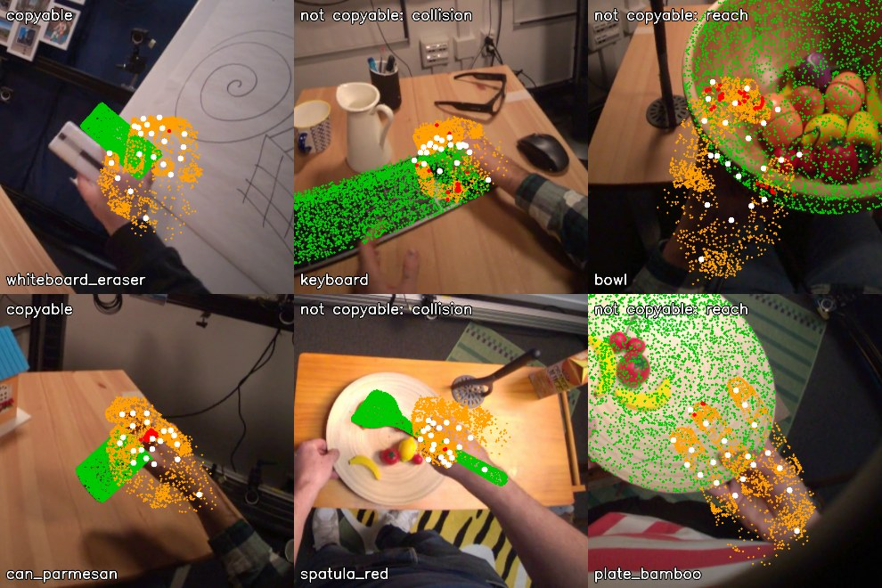
Two tuning clips per outcome. Green: object model. White: human hand. Orange: Allegro mesh points. Red: mesh points more than 5 mm inside the object. Left: copyable (eraser, parmesan can). Middle: collision, the larger Allegro fingers go into the keyboard and the spatula. Right: reach, on the wide bowl and plate the Allegro hand cannot put its fingertips where the human did.
Sensitivity
Reach \ depth
2 mm
5 mm
10 mm
1 cm
2%
5%
8%
2 cm
18%
47%
66%
3 cm
29%
62%
80%
Conclusion
The v2 label passes the acceptance rule set before computing: 47% copyable, and almost no link to hand size (+0.04 inside objects, 44% to 54% by person, against 29% to 74% for the EXP-10 label).
The failures make physical sense: the bigger Allegro fingers collide with flat or crowded objects (keyboard, spatula), and the hand cannot span wide objects the way the human did (bowl, plate). Cylinders are no longer pushed to "not copyable". Some low objects are less obvious (dumbbell 10%, flask 14%) and are worth a look.
Limits, stated plainly:
The share depends strongly on the depth limit (18% at 2 mm, 66% at 10 mm). 5 mm is about the size of the mocap and model error, so the label is partly "how much the Allegro hand overlaps the object, within measurement error". The choice was fixed before computing, and we report the curve.
A reach of 1 cm leaves almost nothing copyable, because the fitted Allegro fingertips sit about 11 mm from the human ones.
One frame per clip. The free base moves the hand 26 mm from the human wrist (median).
The inside or outside sign comes from the nearest surface sample.
Next, all free:
recompute on the v2 label the object-only reference (EXP-12) and the hand shape check (EXP-13), on tuning clips,
then compute the held-out v2 labels with these fixed thresholds.
EXP-17: What predicts the v2 copyable label? (EXP-12 and EXP-13 again)
Date: 2026-10-27. Script: scripts/hot3d_v2_signal.py. Raw output: out/hot3d_checks/v2_signal.json. Meta API cost: $0. Tuning clips only. Held-out clips were not used.
Question
EXP-12 and EXP-13 were scored against the EXP-10 label, which EXP-15 showed to be mostly a retargeting side effect. With the v2 label (EXP-16), how well do the free checks, the video hand shape and object identity predict copyable?
Setup
2,331 tuning clips with a MediaPipe hand during contact (54 of 2,385 left out, as in EXP-13). v2 copyable share: 47%.
Same features and models as EXP-12 and EXP-13, leave one tuning person out, AUC per person and the mean over the six people:
the three free checks (camera stability, retargeting recoverability, action completeness),
object-only reference: the copyable share of each object in the other five people,
video hand shape: 10 MediaPipe features during contact,
mocap hand shape: the same 10 features from UmeTrack, as an upper bound,
combinations with the object share.
The v2 label is also scored at depth limits of 2 mm and 10 mm, to see whether the picture depends on the depth limit.
Results
Main label (depth 5 mm)
Model
AUC, mean of 6 people
Range over people
Within object
Camera / retargeting / completeness grade, single
0.521 / 0.538 / 0.480
Three free checks
0.529
0.49 to 0.57
0.50
Object-only reference
0.741
0.67 to 0.80
Video hand shape
0.521
0.49 to 0.57
0.53
Video hand shape + object
0.751
0.68 to 0.80
0.46
Three free checks + video hand shape + object
0.748
0.68 to 0.80
0.46
Mocap hand shape (upper bound)
0.617
0.55 to 0.73
0.55
Mocap hand shape + object
0.764
0.72 to 0.83
0.48
Other depth limits
Model
Depth 2 mm (18% copyable)
Depth 5 mm (47%)
Depth 10 mm (66%)
Three free checks
0.579
0.529
0.519
Object-only reference
0.719
0.741
0.761
Video hand shape
0.604
0.521
0.542
Video hand shape + object
0.726
0.751
0.756
Mocap hand shape (upper bound)
0.728
0.617
0.643
AUC for the v2 label on tuning clips, leave one person out. Blue: the fixed depth limit of 5 mm. Grey: 2 mm and 10 mm.
What this means
The video hand shape check from EXP-13 lost its signal (0.632 on the old label, 0.521 on v2). It had been learning the retargeting side effect: with the old label, a wide hand opening meant "not copyable", because wide grasps pushed the scaled Allegro fingertips off the object.
Object identity alone predicts the v2 label well (0.74, and 0.72 to 0.76 at the other depth limits). Copyability under v2 is mostly a property of the object: flat, crowded or wide objects fail, compact ones pass.
Our video checks add almost nothing on top of the object: +0.01 for hand shape, and nothing for the three free checks.
Hand pose does carry some information, since mocap hand shape reaches 0.62. MediaPipe on the raw fisheye video does not recover it (0.52). Inside an object, even mocap hand shape adds little (0.55).
For number 2:
If Muse Spark recognises the object and has a fair sense of which objects a large robot hand struggles with, it may come close to 0.74. Our checklist, as it stands, would then lose the main comparison. In the plug-in comparison it would add about 0.01.
The physically sensible label makes the problem about the object, not about the video. The checklist was designed for video quality. That mismatch, not the label, is now the main issue for number 2.
The depth limit changes the numbers by a few hundredths. Among the signals we can actually use, object identity is the strongest at every limit. At 2 mm the mocap hand shape (the upper bound, not a video method) edges past it, 0.728 against 0.719.
EXP-18: Can object geometry carry the copyable signal? (option A check)
Date: 2026-10-27. Script: scripts/hot3d_object_geometry.py. Raw output: out/hot3d_checks/object_geometry.json. Meta API cost: $0. Tuning clips only. Held-out clips were not used.
Question
EXP-17 showed that the v2 copyable label is mostly about the object: object identity alone reaches AUC 0.741, and our video checks add almost nothing. Option A keeps the question and the label, and turns "object property" into concrete object items that Muse Spark would rate from the video. That only makes sense if a few object properties, not the object's name, can carry the signal. Do they, and do they still work on an object the model has never seen?
The features, tests and decision rule were written into the measurement plan before computing ("Option A check").
Setup
2,385 tuning clips with the v2 label (47.0% copyable), 33 objects.
Seven features per object, from its 3D model only:
the largest, middle and smallest side of its oriented bounding box,
flatness (smallest over largest) and elongation (middle over largest),
volume and fill (volume over box volume).
The HOT3D models are not watertight, so volume is the convex hull volume.
Logistic regression on these features. Each clip gets its object's values.
Tests:
leave one person out: AUC per person, mean over the six people,
leave one object out: the model never sees the object it scores. Pooled AUC, 95% interval resampling sequences.
Decision rule (fixed in advance): pass if both AUCs are at least 0.65, fail if either is below 0.60, weak in between.
Results
Test
Object identity reference
Object geometry
Leave one person out, mean of 6 people
0.742
0.695 (0.65 to 0.76 by person)
Leave one object out, pooled
0.5 (cannot score an unseen object)
0.673 (0.645 to 0.698)
Verdict by the rule set in advance: pass.
The strongest single feature is the largest side of the object. On its own its AUC is 0.32, which means 0.68 the other way round: the longer the object, the less often it is copyable. Volume works the same way (0.38).
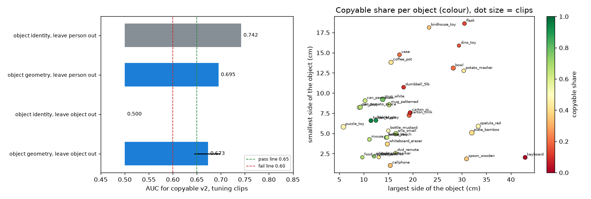
Left: AUC of object identity and object geometry, leaving out a person or an object. Right: every object by its largest and smallest side, coloured by its copyable share. Long or bulky objects (keyboard, flask, dino toy, bowl) are mostly not copyable. Compact, hand-sized ones (holders, mugs, cans, bottles) mostly are.
Objects that geometry explains less well:
the two cartons (19 cm tall, 8% and 19% copyable),
the dumbbell (18 cm, 10%),
the puzzle toy, a small cube that comes out at only 46%.
What this means
Seven numbers about an object's size and shape recover most of what the object's name tells (0.695 against 0.742). Unlike the name, they still work on an object the model has never seen (0.673 against 0.5).
So option A has a basis. A checklist that asks Muse Spark concrete questions about the object (how big it is next to the hand, how long, how flat, how wide) can carry the copyable signal. It can also carry it to new objects, which is the point of a reusable score.
What it does not show: whether Muse Spark can read these sizes from the video, and whether Muse Spark asked the plain question does just as well. Those need the paid run.
Limits:
Only 33 objects. The leave-one-object-out interval resamples sequences, not objects, so it is narrower than the uncertainty over objects.
Volume and fill use the convex hull because the models are not watertight.
Mostly one feature (largest side) drives the result.
Next:
write the Muse Spark object items (size next to the hand, length, flatness, width, handle, crowding) and their high, mid, low anchors,
check them for free with the 3D model numbers as stand-ins,
then compute the held-out v2 labels with the fixed thresholds.
EXP-19: Six object items for the checklist, checked with stand-in grades
Date: 2026-10-27. Scripts: scripts/hot3d_object_items.py, scripts/hot3d_object_sheet.py. Raw output: out/hot3d_checks/object_items.csv, object_items.json. Meta API cost: $0. Tuning clips only.
Question
Option A turns "object property" into concrete items that Muse Spark rates high, mid or low. EXP-18 showed that exact object sizes carry the copyable signal. Do six coarse three-level items, with fixed anchors, keep that signal? Here the grades come from the truth (3D models, mocap, a look at each object), as stand-ins for what Muse Spark would answer.
Items, anchors and the pass rule were written into the measurement plan before computing ("Object items for Muse Spark").
Setup
2,385 tuning clips, v2 label (47.0% copyable).
Six items. High always means "easier for a large four-finger robot hand", and the direction was set from the meaning, not the data:
Item
High
Mid
Low
Stand-in source
Size next to the hand (longest side)
up to 15 cm
15 to 25 cm
over 25 cm
3D model box
Shape (middle over longest side)
0.6 or more
0.3 to 0.6
under 0.3
3D model box
Thickness (shortest side)
4 cm or more
2 to 4 cm
under 2 cm
3D model box
Width to wrap (middle side)
up to 8 cm
8 to 14 cm
over 14 cm
3D model box
Handle
yes
partly
no
by eye, one frame per object
Free space (gap to nearest other object)
10 cm or more
4 to 10 cm
under 4 cm
mocap poses at the contact frame
Handle was judged from the contact sheet below before looking at any label: yes for coffee pot, dumbbell, flask, both mugs, potato masher, spatula, wooden spoon and vase, partly for the whiteboard eraser, no for the rest.
Logistic regression on the six grades. Leave one person out (mean AUC over six people) and leave one object out (pooled AUC). Pass if both are 0.65 or more.
One grasp per object, used only to judge the handle item.
Results
Test
Six items
Exact geometry (EXP-18)
Leave one person out, mean of 6 people
0.683 (0.60 to 0.73)
0.695
Leave one object out, pooled
0.666 (0.639 to 0.693)
0.673
Verdict by the rule set in advance: pass.
Item
AUC alone
Weight in the full model
Size next to the hand
0.673
+2.16
Shape
0.567
-0.30
Thickness
0.536
-0.24
Width to wrap
0.518
-1.10
Handle
0.478
-0.18
Free space
0.534
+0.09
Left: copyable share for each grade of each item. Right: the six coarse items keep almost all of the signal of the exact sizes.
What this means
Six coarse items with fixed anchors keep nearly all of the object signal: 0.683 and 0.666, against 0.695 and 0.673 for exact sizes. If Muse Spark grades them about right, the checklist can carry the copyable signal, also for objects it has not seen.
Size next to the hand does almost all of the work (0.673 alone).
Two items do not behave as their meaning suggested:
Handle: objects with a handle are slightly less often copyable (0.478). Most handled objects here are long tools (spatula, masher, spoon) or large (flask, coffee pot), and size wins.
Width to wrap gets a negative weight once size is known. Among objects of the same length, narrow ones (spoon, marker, remote) are harder. These directions are learned by the regression on tuning clips. The anchors stay as they are.
Free space adds little (0.534). Most grasps have 16 cm or more of room (median).
What this does not test: whether Muse Spark can read these grades from fisheye frames. That needs the paid run. A short pilot on a few tuning clips should check Muse Spark grades against these stand-ins before the full run.
EXP-20: Held-out copyable v2 labels, with the thresholds fixed on tuning
Date: 2026-10-27. Scripts: scripts/hot3d_copyable_v2.py run held_out, scripts/hot3d_v2_heldout_summary.py. Raw output: out/hot3d_copyable/held_out_v2_*, v2_split_summary.json. Meta API cost: $0.
Question
The v2 label was defined and accepted on tuning clips (EXP-16). With the same thresholds, what does it look like on the 1,426 held-out clips? This page looks at labels only. No model or checklist is scored on held-out data.
Setup
Held-out clips: the EXP-11 set, persons P0001, P0010, P0012.
Same code and thresholds as EXP-16: position retargeting, hand shift up to 2 cm, grip within 1.5 cm, reach within 2.0 cm, no Allegro mesh point more than 5 mm inside the object.
Results
Tuning
Held-out
Clips
2,385
1,426
Copyable
47.0%
46.4%
By person
44% to 54%
P0001 46%, P0010 51%, P0012 43%
Hand size correlation inside objects
+0.04
-0.08
Fails: collision / reach / grip
25.5% / 10.9% / 3.9%
31.1% / 8.6% / 5.6%
Allegro tip to human tip, median
11.5 mm
11.4 mm
Sensitivity on held-out (reach 2 cm): depth 2 mm 20%, 5 mm 46%, 10 mm 65%. The tuning values were 18%, 47% and 66%.
Lowest held-out objects: keyboard 1%, flask 4%, bowl 15%, vase 16%, orange juice carton 20%. Highest: gray holder 93%, black holder 92%, white mug 84%, whiteboard marker 80%.
Left: copyable share per person, tuning in blue, held-out in orange. Right: copyable share per object in tuning against held-out (30 objects with at least 20 clips in each). Rank correlation 0.85.
Conclusion
The fixed v2 rule carries over: 46.4% copyable on held-out, close to tuning, inside the band, with person shares from 43% to 51%. The person spread of the old label (30% to 73%) is gone.
Object shares agree closely between the splits (rank correlation 0.85). So the object-only reference, trained on tuning, will be strong on held-out as well. The main comparison has to be read with that in mind.
These labels are now the number 2 ground truth for the AUC. No score or checklist has been run on held-out data.
EXP-21: How well could each number 1 arm do at best?
Date: 2026-10-27. Script: scripts/muse_contact.py selftest. Raw output: out/number1/selftest.json. Meta API cost: $0. Pilot tuning episodes 0, 30 and 53 only.
Question
The code for the two Muse Spark arms of number 1 is written (arm A, Muse Spark alone, and arm C, the SAM rule plus a Muse Spark boundary check). Before paying for them:
Does the code turn answers into contacts and scores correctly?
What is the best each arm could reach, given how it is built? Feedback said arm A cannot reach ±5 frames at 5 fps. Arm C can only adjust the boundaries that arm B finds.
Setup
Arm A: every 6th frame (5 fps) of the 720p episode, 10 frames per call. For each frame and hand, Muse Spark says touching or not. A sample stands for its 6 frames.
Arm C: for each start and end that arm B found (EXP-14, rule chosen on the other pilot episodes), 7 frames 5 frames apart, from 15 before to 15 after. Muse Spark picks the first or last touching frame, or keeps arm B.
Both arms then use the arm B rules: gaps up to 0.2 s joined, contacts shorter than 0.2 s dropped.
Self-test: instead of Muse Spark, the answers come from the main ground truth itself (cleaned glove). This is a perfect Muse Spark. It checks the code and gives each arm its ceiling.
Results
Cleaned glove (main ground truth), 3 pilot episodes, both hands:
Arm
Boundary F1 ±5
Boundary F1 ±15
Contact IoU
Boundaries found / true
A, perfect answers at 5 fps
0.956
0.956
0.957
174 / 190
B, SAM rule as measured (EXP-14)
0.066
0.149
0.747
52 / 190
C, B plus perfect boundary picks
0.149
0.149
0.752
52 / 190
With the raw glove, the A ceiling is 0.825 at ±5 frames. With the labels it is 0.830, and 0.939 at ±15. Arm C stays at 0.12 to 0.15.
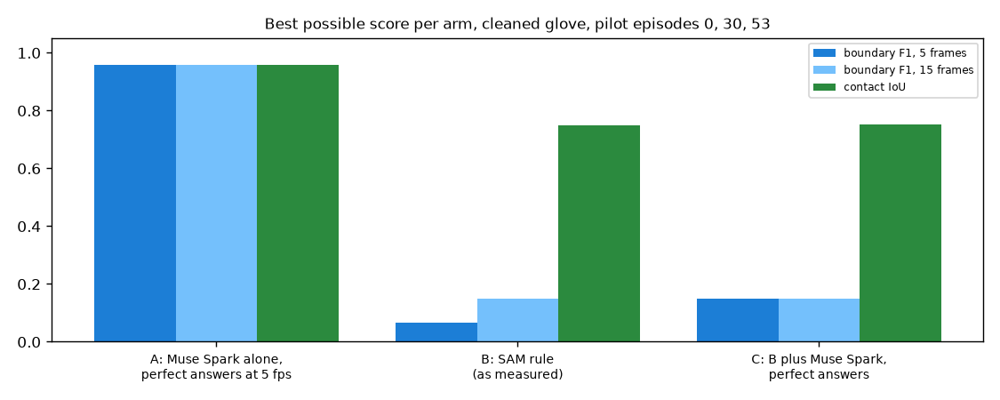
Best possible scores. Arm A with perfect answers at 5 fps, arm B as measured, arm C with perfect boundary picks on top of arm B.
What this means
The code works: perfect answers give near-perfect scores where the design allows it.
5 fps does not stop arm A from reaching ±5 frames. A perfect Muse Spark at 5 fps scores 0.96. The feedback point was too strong. A real Muse Spark will fall short because of its answers, not because of the frame rate.
Arm C cannot beat arm B by much. It can only move the 52 boundaries arm B finds, out of 190, so even perfect picks give 0.15. As built, the planned "SAM plus Muse Spark" arm is limited by how many touches arm B separates, and arm B joins touches that follow each other (EXP-14).
So the comparison A against C, as planned, favours A, for a structural reason. Two ways to make arm C a fair test, to decide before paying:
raise arm B recall first: break contacts when the nearest object changes or the hand leaves for a moment, chosen on the 50 tuning episodes (needs SAM on the remaining tuning episodes, $11.89),
let arm C also look inside long arm B contacts for missed releases and touches, by sampling a few frames per second there (more Muse Spark calls).
Cost estimates without sending: arm A on the 22 held-out episodes about $11.86 (6,817 frames). Arm C about $0.013 per boundary.
EXP-22: Arm B that splits contacts when the nearest object changes
Date: 2026-10-27. Scripts: scripts/contact_cut.py rule, scripts/muse_contact.py selftest. Raw output: out/contact/rule_report.json, rule_segments.json, out/number1/selftest.json (these files now hold the EXP-22 run, the EXP-14 numbers are in its page). Meta API cost: $0. Pilot tuning episodes 0, 30 and 53.
Question
EXP-14 showed that arm B joins touches that follow each other: it found 52 of 190 boundaries. EXP-21 showed that this also caps arm C at 0.15, because arm C can only move the boundaries arm B finds. Does arm B find more touches if it may break a contact when the nearest object changes, or keep short gaps instead of joining them?
Setup
Same features and leave-one-episode-out search as EXP-14, with two more options in the grid:
split on object change: inside a run of near frames, start a new contact when the nearest object id changes, and never join two contacts on different objects,
fill: join gaps of 0, 1 or 2 frames at 10 fps (EXP-14 always joined 2).
Main ground truth: the cleaned glove. The grid includes the EXP-14 rule, so the search can still pick it.
Then the arm C ceiling again: perfect boundary picks on top of the new arm B.
Results
Cleaned glove, leave one episode out:
EXP-14 arm B
EXP-22 arm B
Always in contact
Boundary F1 ±5
0.066
0.151
0.02
Boundary F1 ±15
0.149
0.323
0.02
Contact IoU
0.747
0.663
0.669
Boundaries found / true
52 / 190
392 / 190
12 / 190
Arm C ceiling, boundary F1 ±5
0.149
0.315
All three left-out episodes chose "split on object change". The raw glove gives the same picture (F1 0.132 and 0.275, IoU 0.692).
Green: cleaned glove. Orange: arm B with the new options, chosen on the other two episodes. The right hand in episode 0 now gets separate contacts, close to the glove. The left hand in episode 0, which holds one container for long stretches, is now cut into many pieces.
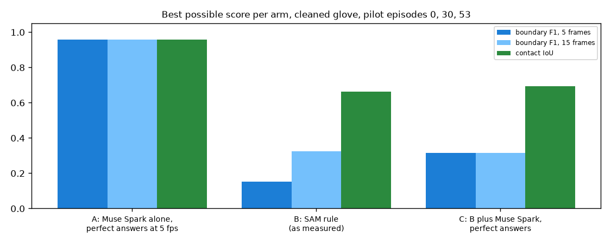
Best possible scores with the new arm B. Arm C, with perfect picks, can now reach 0.315.
Conclusion
Splitting on object change doubles arm B boundary F1 (0.15 at ±5 frames, 0.32 at ±15) and doubles the arm C ceiling (0.32).
It overshoots: 392 boundaries against 190 true ones, and contact IoU drops below "always in contact" (0.663 against 0.669). While a hand holds one object, the nearest object can flicker between it and its neighbours, which cuts long holds into pieces.
Three episodes cannot settle the trade-off. The grid is ready for the 50 tuning episodes once their SAM output exists ($11.89). A rule that also asks the new object to stay nearest for a few frames before splitting would be the next option to add to the grid.
EXP-23: Number 2 paid pilot (P1)
Date: 2026-10-28. Scripts: scripts/sam_hot3d.py, scripts/muse_hot3d.py, scripts/number2_sam_checks.py, scripts/number2_pilot.py. Raw output: out/number2/sam/<window_id>/, out/number2/muse/{checklist,baseline}/, out/number2/sam_checks.csv, out/number2/pilot.json. Meta API cost: $0.20 (SAM $0.10, Muse checklist $0.05, Muse baseline $0.05). Data: score_train clips only (tuning persons). Nothing on held-out was sent or scored.
Question
Before the large number 2 runs (P6 SAM $26.58, P7 Muse about $44), do the calls work on HOT3D and do the answers make sense?
Does SAM 3.1 with the prompts hand and small object find the grasped object on HOT3D tables, and does our code pick that object as the one nearest to the hand?
Do the Muse Spark object grades match the 3D model stand-ins from EXP-19?
What does one call really cost?
Setup
SAM: 3 score_train windows drawn with seed 20261026 (500 frames at 10 fps, 5 clips inside them). Prompts hand and small object.
Muse: 5 score_train clips drawn with seed 20261026, the checklist prompt and the baseline prompt (scripts/prompts/number2_{checklist,baseline}.txt), 6 frames of 720 px each, reasoning effort low.
SAM check: per contact frame (mocap), the dataset 2D box of the grasped object (box2d_objects.csv, turned from the raw orientation to the preview with (1407 - v, u), EXP-08) against (a) any SAM object box and (b) the SAM object that the number 2 code takes as nearest to the clip's hand. A match is box IoU of 0.5 or more.
Muse check: the six object items against the EXP-19 stand-in grades of the same clip. The finger occlusion item has no stand-in.
Bug found and fixed
number2_sam_checks.py crashed on the first HOT3D window. The shared code in contact_cut.py placed masks in a 1280 x 720 frame (OpenGraph), but HOT3D windows are 1408 x 1408. frame_table now takes the frame size, and number2_sam_checks.py passes 1408 x 1408. The OpenGraph path is unchanged (self test gives the same value as before).
Results
SAM, 169 contact frames in 5 clips:
Clip
Object
Contact frames
SAM objects per frame
Grasped object found
Nearest object is the grasped one
P0009_927973d7_left_02183
mug_patterned
23
8.2
100%
100%
P0009_927973d7_left_02268
carton_oj
87
13.3
100%
100%
P0009_927973d7_right_02490
carton_oj
27
8.7
100%
63%
P0009_cf323827_left_02016
bottle_bbq
23
7.9
100%
100%
P0011_e5cb6a80_left_03430
can_tomato_sauce
9
11.9
78%
67%
All
169
98.8%
92.3%
hand finds two hands in every frame with two stable ids.
small object finds 8 to 13 objects per frame, because HOT3D tables are full. The grasped object is among them in 98.8% of contact frames.
Visibility is 1.0 for all 5 clips. On these clips it does not separate anything. Contact clarity ranges from 0.0 to 0.57.
One contact frame per clip. Green: dataset box of the grasped object. Orange: the object our code takes as nearest to the hand. Blue: the other SAM objects.
Muse, 5 clips:
Item
Muse grade equals stand-in
size
5 / 5
shape
5 / 5
thickness
5 / 5
width
3 / 5
handle
4 / 5
free space
5 / 5
All
27 / 30
Muse grade / stand-in grade per clip and item.
Width: Muse said "up to 8 cm" for the white mug and the tomato can. The 3D models put their middle side just over 8 cm. This is a cut point problem more than a wrong answer.
Handle: Muse missed the mug handle. In that clip the person turns the head away while grasping, and frames 2 to 5 do not show the mug at all. Muse graded finger occlusion low for this clip, which is right.
Object names were right (puzzle toy as "rubik's cube", mug as "cup", can).
Baseline: copyable probability 0.85 for the mug and the can (both copyable), 0.10 to 0.20 for the three puzzle toy clips (one copyable, two not). The baseline reasons are about object size against the robot fingers, so the baseline also reads the object.
3 of the 5 Muse clips are the same object (puzzle toy). The sample is small and narrow.
Cost per call:
Input tokens
Output tokens
Cost per call
Estimate used in plan
Checklist
4,384
980
$0.0096
$0.0123
Baseline
3,942
1,126
$0.0097
$0.0119
A 720 px frame costs about 700 input tokens, not 1,100. Output is longer than the 800 assumed. P7 (1,826 clips, both prompts) rescales from $44.17 to about $35.4. SAM was billed exactly as estimated (500 frames, $0.10), so P6 stays $26.58 minus the $0.10 already spent.
Conclusion
SAM works on HOT3D. The grasped object is found in 99% of contact frames, and the nearest object rule picks it in 92%. Errors come from a neighbour that is closer in the image for a few frames.
Muse object grades match the 3D model stand-ins in 27 of 30 cases. The misses are a cut point near 8 cm and a clip where the object is out of view. EXP-19 used the stand-ins to show that the items carry the object signal, and this pilot supports using Muse to grade them.
The visibility check was 1.0 on all 5 SAM clips. It may not vary enough to matter. The full run will show this.
Nothing here changes the plan. P6 and P7 can run as planned, and P7 is about $9 cheaper than planned.
Limits: 5 clips per check, 3 of them one object. This is a check that the calls work, not a measurement.
EXP-24: Arm B splits only when the new object stays nearest
Date: 2026-10-28. Scripts: scripts/contact_cut.py rule, scripts/muse_contact.py selftest. Raw output: out/contact/rule_report.json, rule_segments.json, out/number1/selftest.json (the EXP-22 run is kept as rule_report_exp22.json, rule_segments_exp22.json, selftest_exp22.json). Meta API cost: $0. Pilot tuning episodes 0, 30 and 53.
Question
EXP-22 let arm B start a new contact when the nearest object changes. This doubled boundary F1, but arm B found 392 boundaries for 190 true ones, because the nearest object flickers between the held object and its neighbours. Does it help to count a change only when the new object stays nearest for a few frames?
This is a code check before the 50 tuning episodes (decision D1). Three episodes cannot settle which option is best.
Setup
New option persist in the arm B grid: 1, 3 or 5 frames at 10 fps. A switch of the nearest object that lasts fewer frames is read as the object held before. 1 is the EXP-22 rule. It only matters with "split on object change".
Unit check on a made-up id sequence: short switches are removed, switches of at least persist frames are kept, frames with no id stay unknown.
Same leave-one-episode-out search as EXP-14 and EXP-22. The grid now has 432 settings. Main ground truth: the cleaned glove.
Ablation: the EXP-22 rule chosen for each left-out episode, with only persist changed (1, 2, 3, 5, 8).
Results
Leave one episode out, cleaned glove:
EXP-22 arm B
EXP-24 arm B
Always in contact
Boundary F1 ±5
0.151
0.145
0.02
Boundary F1 ±15
0.323
0.291
0.02
Contact IoU
0.663
0.718
0.669
Boundaries found / true
392 / 190
360 / 190
12 / 190
Arm C ceiling, boundary F1 ±5
0.315
0.297
All three left-out episodes chose persist 3. The raw glove gives the same picture (F1 0.164 and 0.299, IoU 0.717).
Only persist changed, everything else as chosen in EXP-22:
persist
F1 ±5
F1 ±15
IoU
Boundaries found / true
1 (EXP-22)
0.151
0.323
0.663
392 / 190
2
0.145
0.287
0.691
388 / 190
3
0.124
0.288
0.702
344 / 190
5
0.109
0.243
0.717
270 / 190
8
0.087
0.214
0.730
202 / 190
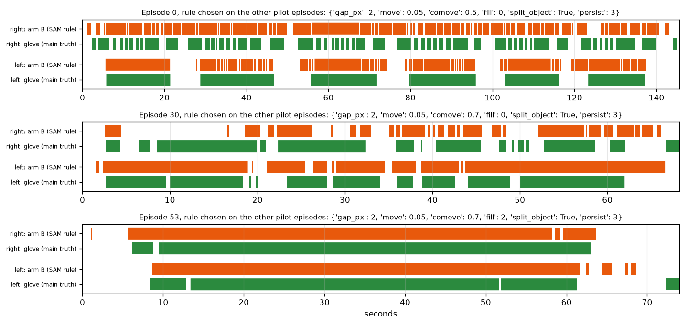
Green: cleaned glove. Orange: arm B chosen on the other two episodes, now with persist 3. The left hand in episode 0 is still cut into pieces during long holds, but fewer than in EXP-22.
Conclusion
Waiting for the new object to stay nearest is a trade-off, not a fix. It removes false splits (IoU 0.66 to 0.72, now above "always in contact") and also removes true ones (F1 at ±5 0.151 to 0.145, arm C ceiling 0.315 to 0.297).
Even at 8 frames, when arm B finds about as many boundaries as there are (202 for 190), F1 at ±5 is only 0.087. Most of the found boundaries are in the wrong place, not just too many. The weak part of arm B is where the near-runs start and end, not only the object flicker.
The option stays in the grid. The 50 tuning episodes (P2, $11.89) will pick between 1, 3 and 5 with the same search, as decided in D1.
Runtime: the grid is three times larger. On 50 episodes the leave-one-out search is estimated at about 1.5 hours on the CPU, which is fine to run in the background.
Limits: 3 episodes, and the search score (F1 at ±15 plus IoU) favours IoU, so it picked persist 3 over 1.
EXP-25: Does undistorting the fisheye frames help MediaPipe?
Date: 2026-10-28. Script: scripts/hot3d_fisheye_check.py. Raw output: out/hot3d_checks/fisheye.json, fisheye.csv, fisheye_rows.json (side check: the same files with _f1.0). Meta API cost: $0. Data: tuning persons only (score_train and item_train clips).
Question
The original plan said to undistort the HOT3D Aria fisheye frames before MediaPipe. So far MediaPipe runs on the raw fisheye preview. Should we undistort, or report fisheye as a limit?
Decision rule (written in the measurement plan before computing)
Undistort only if undistortion raises the share of frames with the hand found by 5 points or more, or lowers the median 2D point error by 20% or more, or lowers the median hand shape feature error by 20% or more. Otherwise keep the raw preview and report fisheye as a limit.
Setup
400 clips of tuning persons, drawn with seed 20261026, the middle contact frame of each. 395 frames had a mocap hand pose.
MediaPipe Hands, static image mode, on two versions of each frame:
raw: the preview frame as it is,
undistorted: the same frame turned into a pinhole image with the dataset lens model (FISHEYE624), focal length 0.7 of the fisheye focal length, so that most of the view stays inside the image.
Truth: the mocap hand (UmeTrack landmarks, EXP-09) projected to the preview with the lens model. MediaPipe points from the undistorted frame are mapped back to the preview, so both are measured in the same pixels.
Measures per frame:
found: a MediaPipe hand whose median point error is under 0.5 hand size (wrist to middle finger base in pixels),
2D error: median point error over hand size,
hand shape error: the ten hand shape features of EXP-13 from MediaPipe 3D points against the same features from mocap, each over its spread across frames, mean over the ten features.
Side check: the same with focal length 1.0, which keeps the image centre at full size but cuts off more of the edge.
Results
Raw preview
Undistorted (focal 0.7)
Change
Needed to undistort
Hand found
70.6%
60.3%
-10.3 points
+5 points
Hand found, hand fully inside the undistorted image (372 frames)
74.5%
63.7%
-10.8 points
2D error over hand size (212 frames found in both)
0.102
0.113
10.8% worse
20% better
Hand shape error (same frames)
0.832
0.775
6.9% better
20% better
Side check, focal 1.0: hand found 70.6% raw against 62.0% undistorted, 2D error 0.106 against 0.107, hand shape error 0.827 against 0.805. Only 80% of the hands are fully inside this image, and on those 77.0% against 71.6%.
Where the hands are: the median wrist is 49 degrees from the image centre, and 90% of wrists are within 65 degrees. Most grasps happen in the outer part of the fisheye image, where distortion is strongest.
Raw (blue) against undistorted (orange), by the angle of the wrist from the image centre. Undistortion finds fewer hands in every zone. 14 frames beyond 90 degrees by the angle estimate are not shown.
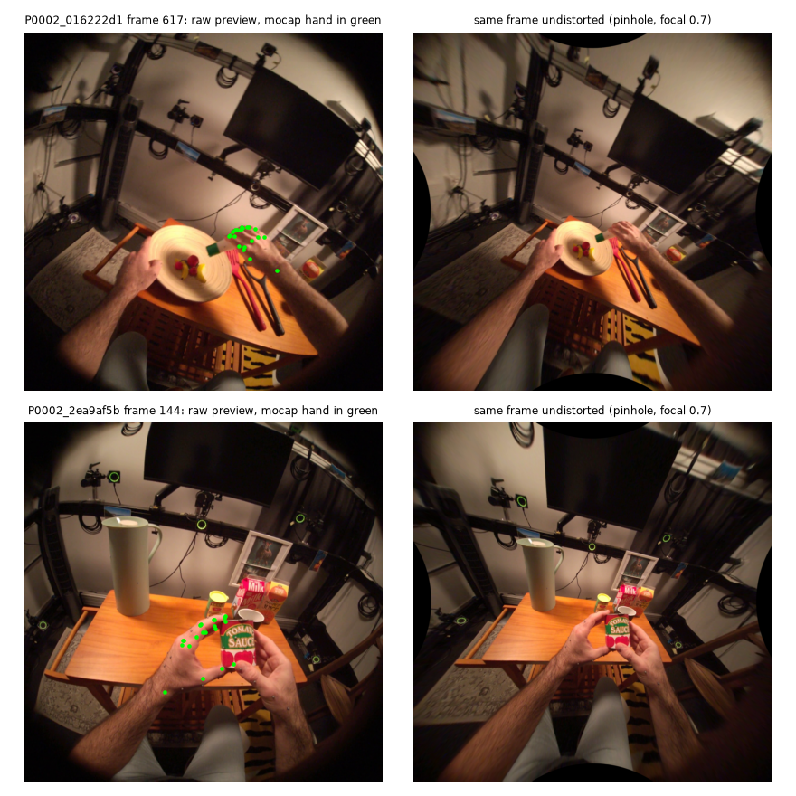
Left: raw preview with the mocap hand in green. Right: the same frame undistorted. Straight edges come out straight, so the lens model is applied correctly.
Conclusion
Undistortion does not pass the rule. It finds 10 points fewer hands, makes the 2D points slightly worse, and improves hand shape by only 7%. The focal 1.0 side check gives the same answer, so this is not a choice of focal length.
The loss is not only hands cut off at the edge: on hands fully inside the undistorted image, MediaPipe still finds 11 points fewer. A likely cause is that the pinhole image stretches the outer part, where most hands are, and shrinks the centre.
Decision: keep the raw preview and report fisheye as a limit.
Side finding: the hand shape error is about 0.8 of the mocap spread in both versions. MediaPipe 3D hand shape follows the mocap hand only loosely on this footage, with or without undistortion. This fits EXP-17, where video hand shape had no signal for the v2 label.
Muse frames stay raw. Whether Muse judges object size better on undistorted frames is not tested, because that costs credit.
Limits: one frame per clip, MediaPipe only, and the mocap hand as truth (about 2 mm from the object surface during grasps, EXP-09).
EXP-26: Code check of the P7 gate and the unseen object report
Date: 2026-10-28. Scripts: scripts/number2_score.py (--gate, --check), scripts/number2_gate_noise.py. Raw output: out/number2/gate_standin.json, gate_fake_muse_selftest.json, number2_check.json, gate_noise.json. Meta API cost: $0. Data: tuning persons only. Stand-in grades (EXP-19) take the place of Muse Spark. Nothing on held-out was used.
Question
The measurement plan now splits the number 2 Muse Spark run into P7a (400 score_train clips) and P7b (held-out), with a gate in between, and adds a report on objects the score has never seen (comparison 4). Both were written before computing. Does the code do what the plan says, and how hard is the gate to pass?
Setup
number2_score.py --gate: logistic regression on the six object item grades of the 400 score_train clips, v2 label. Leave one person out (mean AUC over the six people) and leave one object out (pooled AUC, 95% interval resampling sequences). Pass if both are 0.65 or more, stop if either is below 0.60, weak in between. It refuses to run until every one of the 400 clips has a Muse Spark grade. --standin runs it on the stand-in grades.
Unseen object report, now in the output of --check and --final: for each test object, the hand shape fit model, its cut points and the score weights are fit again without that object. The object-only reference gives every clip the training base rate.
Checks:
--check before and after the change: the earlier outputs must not move.
--gate with only the 5 P1 clips graded: it must refuse.
--gate on fake Muse grades (stand-ins with 10% of grades replaced at random), to run the full real-grade path, including the extra rows.
The hand shape fit refit really changes when an object is left out.
How the gate result falls as grading errors grow: stand-in grades with 0% to 40% of grades replaced at random, 10 draws each.
Results
Code checks:
Check
Result
--check weights, our score, object reference
unchanged
--gate with 5 of 400 clips graded
refuses: 395 clips have no Muse grade yet
--gate on fake Muse grades
runs, reports the extra rows; item agreement 91% to 96%, as expected for 10% random replacement
Hand shape fit without mug_white
592 of 3,811 clip grades change, so the refit happens
Gate on stand-in grades (perfect grading, 400 clips):
Test
AUC
Needed to pass
Leave one person out, mean over people
0.657 (0.484 to 0.794 by person)
0.65
Leave one object out, pooled
0.666 (0.608 to 0.723)
0.65
Verdict
pass
EXP-19 had 0.683 and 0.666 on all 2,385 tuning clips. On 400 clips the person test drops to 0.657, just over the bar.
Gate against grading errors:
Grades replaced at random
About the same as the stand-in
Person out
Object out
Verdicts in 10 draws
0%
100%
0.657
0.666
pass
5%
97%
0.643
0.650
2 pass, 8 weak
10%
93%
0.640
0.637
1 pass, 8 weak, 1 stop
20%
87%
0.608
0.600
4 weak, 6 stop
30%
80%
0.594
0.578
2 weak, 8 stop
40%
73%
0.566
0.544
10 stop
A random grade equals the old one a third of the time, so replacing a share r leaves about 1 - 2r/3 of the grades the same as the stand-in.
Both gate tests against the share of grades replaced at random. Line: mean of 10 draws. Band: lowest to highest draw.
Unseen objects in the --check run (train item_train, test score_train, stand-in grades):
Main comparison
Unseen objects
Our score
0.721 (0.668 to 0.775)
0.675 (0.618 to 0.731)
Object-only reference
0.776 (0.731 to 0.819)
0.5 by construction
Conclusion
The code does what the plan says. The earlier outputs did not change, and the gate refuses to run on partial Muse grades.
The gate is tight. With perfect grades it passes by 0.007. At the agreement seen in the P1 pilot (27 of 30, 90%, about 15% replaced), the expected verdict is "weak", which means a decision with the user before P7b. Below about 87% agreement it is most likely "stop".
Part of this is the sample: 400 clips over six people, about 67 per person, and two people (P0003, P0014) are near 0.5 even with perfect grades.
On tuning clips the object-only reference beats our score in the main comparison (0.776 against 0.721). On unseen objects our score keeps 0.675 while the reference falls to 0.5. This is the reason the unseen object report was added, and it is likely to show the same pattern on held-out.
The gate and its rule are not changed here. They were fixed before any Muse grade on the 400 clips exists. Changing them is a decision for the user, made before P7a.
Limits: random replacement is a simple error model. Real Muse errors are likely to cluster (for example width near 8 cm in EXP-23), which can hurt less or more than random errors.
EXP-27: Code checks for the timing shift and the checklist against learning rows, and a power check
Date: 2026-10-28. Scripts: scripts/muse_contact.py (selftest --lag, score, c --sample), scripts/number2_score.py --check, scripts/number2_power.py. Raw output: out/number1/selftest_lag6.json, out/number2/number2_check.json, out/number2/power.json. Meta API cost: $0. Data: tuning only. No Muse Spark answer is used: number 1 uses answers taken from the glove, number 2 uses the EXP-19 stand-in grades.
Question
The measurement plan gained two sets of rows, both written before any data:
Number 1: arms A and C get their own timing shift learned on tuning (until now only arm B had one), with a paired bootstrap over episodes.
Number 2, comparison 5: Muse Spark alone (R1), the checklist grades with equal weights (R2), the same grades with learned weights (R3), with paired bootstrap differences over sequences.
Does the code do this? And can a held-out set of 3 persons detect "R3 better than R2" at all?
Setup
Number 1: selftest --lag 6 makes the perfect answers see every change 6 frames early, like visible contact that comes before glove pressure (EXP-06). The arm A and C shifts are then learned on the same 3 pilot episodes. A working shift should bring the scores back to the no-lag ceilings. The plain selftest must give the same file as before.
Number 2: number2_score.py --check (train item_train, test score_train, stand-in grades) now also writes comparison 5. The earlier outputs must not change.
Power: for each of the 20 ways to pick 3 of the 6 tuning persons as a pseudo held-out set, R3 is trained on 400 clips of the other 3 persons, and R3 minus R2 is tested with the paired sequence bootstrap. Once with the stand-in grades as they are, once with 15% of grades replaced at random (3 draws, about the P1 agreement of EXP-23).
Results
Number 1, oracle answers 6 frames early, cleaned glove, pilot episodes:
Row
Boundary F1 ±5
IoU
Ceiling without lag (EXP-24)
A
0.863
0.948
0.956
A + shift (learned: +3, +3 frames)
0.956
0.975
C
0.149
0.728
0.297
C + shift (learned: +5, +6 frames, moved boundaries only)
0.307
0.750
The shifts undo the lag. Arm A is quantised at 6 frames (5 fps), so its learned shift is 3, half a sample.
Without a shift, a 6 frame lag halves arm C (0.297 to 0.149). Muse Spark picks the visible touch and so removes the arm B shift. This is the case the new rows are for.
The plain selftest output is byte for byte the same as before.
Paired bootstrap code runs (A + shift minus A: +0.093, C + shift minus C: +0.158). With 3 episodes the interval means nothing, it only checks the code.
Number 2, --check on tuning, stand-in grades (finger occlusion has no stand-in, so R2 and R3 use the six object items):
Row
AUC
95% interval
R2 equal weights
0.647
0.592 to 0.699
R3 learned weights
0.714
0.657 to 0.769
Our full score
0.721
0.668 to 0.775
Difference
Value
95% interval (sequences)
R3 minus R2
+0.067
0.014 to 0.120
Our score minus R3
+0.007
-0.012 to 0.030
Learned weights: size +2.13, width -1.04, handle -0.21. Equal weights count width and handle in the direction of their meaning, which the labels say is wrong (EXP-19). That is where learning gains.
The local and SAM checks add nothing on top of R3 (+0.007), as expected from EXP-17.
The earlier --check outputs did not change. The R1 rows ran on the 5 P1 clips only, as a code path.
Power, pseudo held-out sets of 3 persons (median 1,192 clips, 41 sequences; held-out has 1,426 clips, 51 sequences):
Grades
Sets
R3 minus R2, median (range)
Interval above 0
Stand-ins as they are
20
+0.062 (+0.021 to +0.102)
95% of sets
15% replaced at random
60
+0.049 (-0.002 to +0.075)
77% of sets
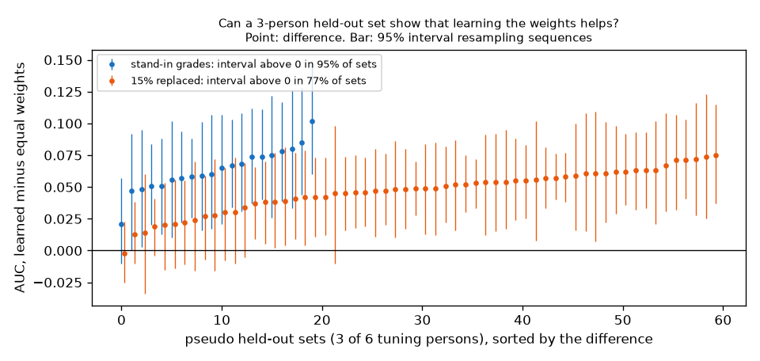
Each point is one pseudo held-out set, with its 95% interval. Blue: stand-in grades. Orange: 15% of grades replaced at random.
Conclusion
The timing shift code works: on answers that come 6 frames early it recovers the ceilings of arms A and C. Without it, arm C would lose half of its ceiling to the lag.
Comparison 5 works and, on tuning, learning the weights beats equal weights by about 0.07 AUC, mainly by turning width and handle around.
A held-out set of 3 persons is large enough: the gain is detected in 95% of sets with perfect grades and 77% with P1-level grade errors.
Cost found on the way: arm C now has about 120 boundaries per episode (EXP-24 arm B), so held-out arm C is about $34, not $5 to $10, and the 200 tuning boundaries for the arm C shift are about $2.61 (dry run). Both depend on the arm B chosen on 50 episodes.
Limits: the stand-ins are not Muse Spark grades, random errors are a simple model of Muse Spark mistakes, and the pseudo held-out persons share objects with the training persons, as the real held-out does.
EXP-28: The ground truth as a reusable benchmark
Date: 2026-10-28. Scripts: scripts/benchmark_export.py, benchmark/score_number1.py, benchmark/score_number2.py. Output: benchmark/ (README, two label files, two license notes, two example prediction files). Meta API cost: $0.
Question
The proposal says teams filter human video with their own rules and do not publish a score others can reuse. Our heaviest and most checked work is the ground truth (cleaned glove for number 1, copyable v2 for number 2). Can it be released as a benchmark that scores any video filter, whatever our own checklist scores, and do the release scorers give the same numbers as the project code?
Setup
License texts that come with the data: data/ego-tactile/README.md (OpenGraph: CC BY 4.0) and data/hot3d/assets/license.txt (HOT3D: sequence data CC BY-SA 4.0, hand data CC BY-NC-SA 4.0, object models CC BY-SA 4.0 and not for sale). The copyable label uses the hand data, so number 2 is shared under CC BY-NC-SA 4.0. This is our reading of the texts, not legal advice.
benchmark_export.py writes only labels we made, no video, sensor or motion capture values:
number1/ground_truth.json: per episode and hand, contact segments from the cleaned glove (main) and the raw glove, frame ranges at 30 fps,
number2/clips.csv: per clip, where it is, the copyable label, the first condition that fails (grip, reach, collision), and the label at 2 mm and 10 mm depth limits.
Two scorers that need only numpy, pandas and scikit-learn, written apart from the project code. Checked against numbers the project code already gave, on tuning episodes and clips.
Results
What is in the files:
Tuning
Held-out
Number 1 episodes / clean contacts
50 / 955
22 / 287
Number 2 clips / persons / objects
2,385 / 6 / 33
1,426 / 3 / 33 (all seen in tuning)
Number 2 copyable (5 mm)
47.0%
46.4%
Number 2 copyable at 2 mm / 10 mm
17.5% / 65.7%
The labels written to clips.csv equal the labels in the project clip table for all 3,811 clips (checked in the export).
Left: length of the cleaned glove contacts. Right: share of clips that are copyable and, for the others, the first condition that fails.
Scorer checks, release scorer against project code:
Input
Release scorer
Project code
Arm B segments (EXP-24), pilot episodes, cleaned glove: F1 ±5, F1 ±15, IoU
0.145, 0.291, 0.718
0.145, 0.291, 0.718 (EXP-24)
Same segments, raw glove
0.155, 0.293, 0.717
0.155, 0.293, 0.717 (selftest)
Always in contact, pilot episodes: F1 ±5, IoU
0.02, 0.669
0.02, 0.669 (EXP-14)
Object share reference (item_train shares) on score_train clips: AUC, interval
0.776, 0.731 to 0.819
0.776, 0.731 to 0.819 (EXP-26)
Same, AUC per person
P0002 0.735 to P0015 0.785, all six equal
equal
EXP-24 reported 0.164 on the raw glove because there the rule was chosen again for the raw glove. The exported segments were chosen on the cleaned glove, and the project selftest gives the same 0.155 for them.
A smoke run of the number 1 scorer on held-out with "always in contact" gives F1 ±5 0.042 and IoU 0.600 (a reference row, no method involved).
Conclusion
The ground truth is now a self-contained benchmark in benchmark/, with a README, license notes and example inputs. It stays useful whatever our checklist scores in the final run.
The release scorers reproduce the project numbers exactly, so results scored with them can be compared with ours.
Licenses: number 1 can be shared under CC BY 4.0. Number 2 must be shared under CC BY-NC-SA 4.0 and not sold, because it uses HOT3D hand data.
All 33 objects appear in both splits, so the object share lookup is a strong reference on held-out. The README says so and asks for a check on unseen objects.
Limits: the benchmark covers 72 episodes of one glove setup and 9 persons of HOT3D. The copyable label depends on the collision depth limit, which is why the 2 mm and 10 mm labels are included.
EXP-29: First real Muse Spark answers on tuning data (arm A on 3 episodes, P7a)
Date: 2026-10-28. Scripts: scripts/muse_contact.py a, scripts/muse_hot3d.py, scripts/tuning_muse_check.py, scripts/number2_score.py --gate. Raw output: out/number1/muse_a/, out/number2/muse/{checklist,baseline}/, out/tuning_muse_check.json, out/number2/gate.json. Meta API cost: $10.62 (arm A $2.64, checklist $4.15, Muse alone $3.83). Total spent so far: $12.35. Data: tuning only. Nothing on held-out was sent or scored.
Question
Three claims rested on stand-in grades or simulated answers (EXP-26, EXP-27). Do they hold with real Muse Spark answers?
Timing shift: Muse Spark sees a touch before the glove does, and a shift learned from the glove fixes that.
Learning: weights learned from the labels beat the plain mean of the checklist grades.
Unseen objects: our score still works on objects it has not seen, where the object name reference cannot.
Setup
Number 1: arm A (Muse Spark alone, 10 frames per call at 5 fps) on tuning episodes 0, 30 and 53, 146 calls, every frame answered. The shift is learned on two episodes and applied to the third, for each episode in turn. Main truth: the cleaned glove.
Number 2: the checklist call and the Muse alone call on the 400 score_train clips, every reply parsed. Rows, all scored leave one person out (trained on the other five people):
R1 Muse alone (its copyable probability),
R2 the mean of the seven checklist grades (equal weights, no learning),
R3 a logistic regression on the same seven grades,
for reference: R3 on the stand-in grades, and the object name reference (copyable share of the object in the other people's clips). Paired differences with a 95% interval resampling sequences. Leave one object out for R3. The P7 gate on the six object items.
Results
Number 1: timing shift
Row
Boundary F1 ±5
Boundary F1 ±15
IoU
Start / end error (frames)
Arm A
0.062
0.171
0.804
-7 / +7
Arm A + shift (learned on the other two episodes)
0.132
0.240
0.824
-5 / +2
Arm B (EXP-24, for reference)
0.145
0.291
0.718
Always in contact
0.02
0.02
0.669
Muse Spark marks a touch about 7 frames (0.23 s) before the glove and its end about 7 frames after. The learned shift is the same on every fold: +6 to +8 frames at the start, -6 to -7 at the end. For held-out it is +7 and -7 (learned on all three).
The shift doubles boundary F1 at ±5 frames. Over 3 episodes the paired interval is 0.000 to 0.132 (difference +0.070), so it is only at the edge.
Arm A finds 68 boundaries for 190 true ones. It joins short touches into one long contact (episode 0, right hand, in the figure), so its IoU is the best of all arms (0.80 to 0.82) but its F1 stays low. The perfect-answer ceiling at 5 fps was 0.956 (EXP-21), so the limit is what Muse Spark sees, not the frame rate.
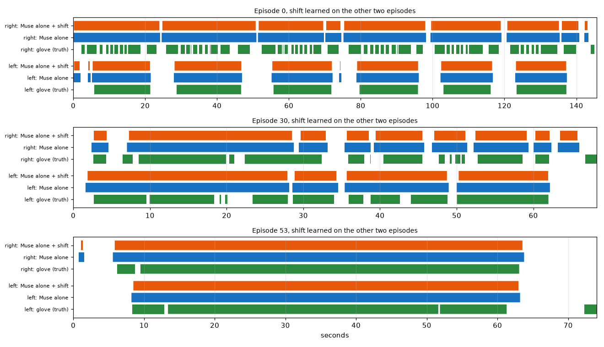
Green: cleaned glove. Blue: Muse Spark alone. Orange: the same with the shift learned on the other two episodes.
Number 2: checklist against learning
Leave one person out, 400 clips, 43.5% copyable:
Row
AUC pooled
Mean over people
R1 Muse alone
0.516
0.521
R2 checklist, equal weights
0.627
0.597
R3 checklist, learned weights
0.646
0.638
R3 on stand-in grades (perfect grading)
0.671
0.657
Object name reference
0.688
0.670
Difference
Value
95% interval
Gain
R2 minus R1 (asking through the checklist)
+0.111
0.034 to 0.184
yes
R3 minus R1
+0.130
0.043 to 0.206
yes
R3 minus R2 (learning the weights)
+0.019
-0.023 to 0.058
no
Object reference minus R3
+0.042
0.002 to 0.083
reference better
Unseen objects (leave one object out):
Row
AUC pooled
R3 learned, object left out
0.607
R1 Muse alone (learns nothing)
0.516
Object name reference
0.5 by construction
R3 minus R1
+0.091 (0.003 to 0.171)
Gate (six object items): leave one person out 0.636, leave one object out 0.601 (0.548 to 0.650). Verdict: weak. As decided before P7a, P7b goes ahead.
How often Muse Spark grades equal the stand-ins: size 75%, shape 83%, thickness 78%, width 49%, handle 90%, free space 62%. The P1 pilot (27 of 30) was too optimistic. Width is close to a guess.
Weights learned on all 400 clips with real grades: shape +1.30, width +0.99, finger occlusion +0.45, size +0.37, handle +0.26, thickness -0.30, free space -0.13. The stand-in weights turned width around (EXP-19, EXP-27). The real grades do not.
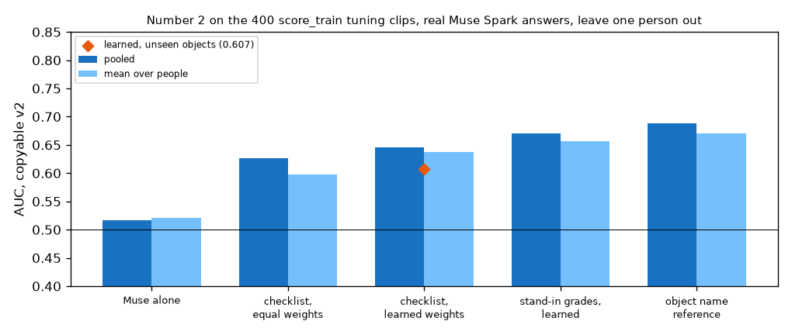
Leave one person out AUC per row. Diamond: learned weights scored on objects left out of training.
Conclusion
Claim 1, timing shift: holds on tuning. Muse Spark is about 7 frames early at the start and 7 late at the end, the shift is stable across episodes, and it doubles boundary F1. Three episodes are too few to be sure. The held-out arm A run will settle it.
Claim 2, learning: does not hold on tuning. Learned weights beat equal weights by only 0.019, inside the noise. With real grades the main gain comes from the checklist itself: asking Muse Spark item by item beats asking it directly by 0.11 AUC. Muse Spark asked directly is close to a coin flip (0.52).
Claim 3, unseen objects: holds on tuning. On objects left out of training the checklist score keeps 0.607, against 0.516 for Muse alone and 0.5 for the object name reference.
The object name reference still beats our score on known objects (0.688 against 0.646), as expected from EXP-26.
Muse Spark grades the object items less well than the P1 pilot suggested. Width (49% equal to the stand-in) is the weakest item.
These are tuning numbers. The held-out runs (P4 rest, P7b) decide what is reported. The comparisons are already fixed in the measurement plan.
EXP-30: Where Muse Spark goes wrong on tuning, and one prompt revision
Date: 2026-10-28. Scripts: scripts/prompt_revision_check.py, scripts/muse_contact.py a --a-version 2, scripts/muse_hot3d.py --task checklist_v2. Prompts: scripts/prompts/number1_arm_a_v2.txt, scripts/prompts/number2_checklist_v2.txt. Raw output: out/number1/muse_a_v2/, out/number2/muse/checklist_v2/, out/prompt_revision.json. Meta API cost: $6.71 (arm A version 2 $2.64, checklist version 2 $4.07). Total spent so far: $19.06. Data: tuning only. Nothing on held-out was sent or scored.
Question
EXP-29 gave the first real Muse Spark answers. Before any held-out call the prompts can still change. Where does Muse Spark go wrong, and does one revision of each prompt fix it? The rule that picks the version for held-out was written in the measurement plan before the revised prompts were sent ("One prompt revision on tuning").
Error analysis of version 1 (free)
Number 2 checklist, 400 score_train clips, Muse grade against the 3D model grade (EXP-19 stand-ins):
Size: 72 of 103 mid-size objects (15 to 25 cm) are called small.
Width: 56 of 133 objects wider than 14 cm are called "up to 8 cm". Muse Spark seems to judge the part in the hand, not the whole object.
Thickness: 54 of 323 objects of 4 cm or more are called thin.
Handle is good (90% equal). Free space is noisy (62%).
Muse Spark alone: 72% of its answers are 0.85 or more and 27% are 0.25 or less. Its mean answer per object has a rank correlation of 0.09 with the copyable share of that object. It rates keyboard, bowl and juice carton (0% to 8% copyable) as likely. It does not know which objects fail.
Number 1 arm A, tuning episodes 0, 30, 53: Muse Spark covers the glove contacts well (77% to 100% of contact frames), but it rarely marks a short release between two contacts as "not touching":
Release length
Releases
Marked "not touching" at least once
up to 0.2 s (below the 5 fps sampling)
5
0%
0.2 to 0.5 s
27
4%
0.5 to 1 s
27
15%
1 to 2 s
12
83%
over 2 s
18
94%
So arm A joins touches that are less than 1 s apart, which is why it finds 68 of 190 boundaries.
The revisions
Checklist version 2: Muse Spark gives the three sides of the whole object in cm, with the hand as a ruler (hand length 19 cm, palm width 8.5 cm, finger thickness 2 cm, no object examples). Our code turns the numbers into the size, shape, thickness and width grades with the EXP-19 anchors. Handle, free space and finger occlusion are asked as before.
Arm A version 2: the prompt says that a hand which lets go for a moment between two grasps is not touching, and asks to look for a visible gap in every frame.
Muse Spark alone keeps its prompt (it is the comparison the proposal defines). This is a limit of the comparison: the checklist got one revision on tuning, Muse alone none.
Results
Number 2, 400 score_train clips, leave one person out:
Version 1
Version 2
Size equal to 3D model grade
75%
79%
Shape
83%
85%
Thickness
78%
84%
Width
49%
52%
Handle / free space
90% / 62%
90% / 61%
R2 equal weights, pooled / mean over people
0.627 / 0.597
0.632 / 0.623
R3 learned, pooled / mean over people
0.646 / 0.638
0.611 / 0.625
R3, objects left out
0.607
0.596
Version 2 cm estimates against the 3D model box (median ratio, middle half): longest side 0.97 (0.86 to 1.04), middle side 0.86 (0.72 to 1.03), shortest side 0.85 (0.65 to 0.99). The longest side is read well. The other two are underestimated, so width stays the weakest item.
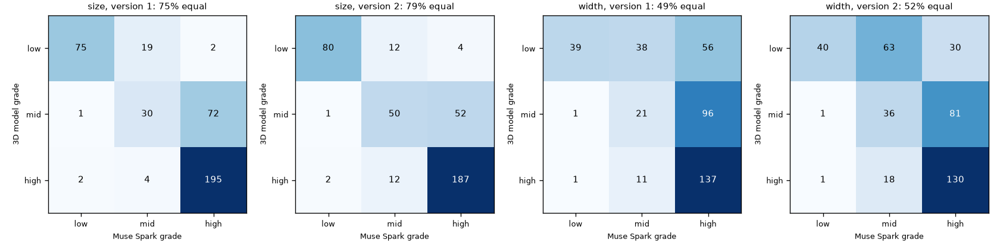
Muse Spark grade against the 3D model grade for size and width, versions 1 and 2. Version 2 moves some mid-size objects out of "small", but many wide objects are still called narrow.
Number 1, arm A, tuning episodes 0, 30, 53, shift learned on the other two:
Version 1
Version 2
Boundary F1 ±5, with shift
0.132
0.120
Boundary F1 ±15, with shift
0.240
0.248
IoU, with shift
0.824
0.826
Boundaries found (of 190)
68
76
Learned shift (start, end)
+7, -7
+7, -6
Version 2 changed only 29 of 1,442 frame answers (2%). The releases it newly caught and newly missed cancel out, so the release table is the same.
Share of glove releases that Muse Spark marks as "not touching", by release length, for both versions.
Decision (by the rule fixed before sending)
Checklist: version 2 R3 (0.625) is not higher than version 1 (0.638), so version 1 stays for P7b.
Arm A: version 2 F1 (0.120) is not higher than version 1 (0.132), so version 1 stays for held-out. The held-out shift is +7, -7.
No further revision, as written in the plan.
Conclusion
Muse Spark's object errors are systematic: it sees objects as smaller and narrower than they are. Asking for centimetres makes the grades more accurate (size, shape and thickness up by 2 to 6 points), but the learned score does not get better. With 400 clips the difference (0.013) is within noise either way.
Muse Spark alone does not know which objects a robot hand fails on. This is knowledge only the sensor-based label has, and it is the gap the checklist closes (EXP-29: 0.52 to 0.63 or more).
Arm A cannot see releases shorter than about 1 s, and a prompt does not change that. At 5 fps a 0.5 s release is 2 to 3 frames in which the hand is still very close to the object. This limits arm A boundary F1, not the frame rate (the perfect-answer ceiling is 0.956).
Both held-out runs use version 1 prompts, as before.
EXP-31: Code check for comparison 6 and the extra rows
Date: 2026-10-28. Script: scripts/number2_score.py --check (new functions object_rate_add_on, extra_rows, pair_auc, draw_rates), fake-data checks in scripts/check_paid_cache.py. Raw output: out/number2/number2_check.json (keys object_rate_add_on, extra). Meta API cost: $0. Data: tuning only. Train item_train (1,985 clips), test score_train (400 clips). The six object items are the EXP-19 stand-in grades, not Muse Spark. Muse alone is the real P7a answer.
Question
The October 28 proposal added comparison 6 (the object rate as an add-on) and two extra rows (AUC inside each object, AUC per failure reason). Their rules were written in the measurement plan before computing. Does the code follow them, and does it leave the earlier outputs unchanged?
Setup
Comparison 6, as in the plan. For k = 5, 20 and all labeled clips of the object, the object rate is (copyable + 1) / (k + 2). A logistic regression on logit(our score) and logit(object rate) is trained on the training clips, with our score left one person out and rates drawn from other persons. It is applied to the test clips. 20 draws for k = 5 and 20. Paired bootstrap over sequences (1,000 draws).
In check mode the labeled pool is item_train (1,985 clips), so the score_train test clips are never in it. In the final run it is all 2,385 tuning clips.
Extra rows. AUC inside each object is the share of correctly ordered pairs from the same object, ties counting half. The failure reason is failed_condition from benchmark/number2/clips.csv. The code stops if its copyable label differs from clips_final.csv (it matches on all 3,811 clips).
Fake-data checks: the AUC inside groups equals the sklearn AUC per group, weighted by pairs, also with many ties. Rates leave out the clip's own person and give 1/2 for an unseen object.
Results
The fake-data checks pass (30 of 30 in check_paid_cache.py). Every earlier key of number2_check.json is byte for byte the same. The run takes about 70 seconds.
Comparison 6 (score_train, stand-in grades):
Labeled clips
Object rate alone
Combined
Combined minus rate
Combined minus our score
0
0.721 (our score)
5
0.722
0.749
+0.027 (-0.002 to 0.060)
+0.028 (-0.013 to 0.061)
20
0.770
0.773
+0.003 (-0.010 to 0.017)
+0.052 (0.014 to 0.091)
all
0.777
0.783
+0.005 (-0.006 to 0.019)
+0.061 (0.028 to 0.095)
The weight on our score falls from 0.63 (k = 5) to 0.22 (all) as the object rate gets more reliable.
Extra rows (score_train):
Score
Inside objects
Inside object and person
vs grip fails (22)
vs reach fails (50)
vs collision fails (154)
Our score
0.574 (0.495 to 0.652)
0.520
0.775
0.693
0.723
R3 (learned grades)
0.568 (0.505 to 0.636)
0.550
0.795
0.698
0.708
Muse alone
0.526 (0.450 to 0.613)
0.532
0.614
0.566
0.486
Object rate
0.500 (by construction)
0.500
0.860
0.719
0.783
Pairs from the same object are 1,074, or 2.7% of all pairs. Only 10 objects have 5 or more clips of each kind in these 400 clips (27 on held-out).
Conclusion
The code for comparison 6 and the extra rows works and follows the plan. The earlier outputs do not change. These numbers use stand-in grades on tuning clips. They test the code, and they are not results. They suggest what the held-out run may show: with 5 labeled clips our score still adds to the object rate, from 20 clips on the object rate alone is as good as the combination, and inside an object the score is near chance. The final numbers come only from --final on held-out.
EXP-32: Arm B (SAM rule) fixed on all 50 tuning episodes (P2)
Date: 2026-10-28. Scripts: scripts/sam_episodes.py --split tune --send, scripts/contact_cut.py features --split tune, contact_cut.py rule, contact_cut.py rule-apply --train tune --apply tune. Raw output: out/sam10/episode_*/, out/contact/rule_report.json, out/contact/rule_segments.json (leave one episode out, the input for the arm C shift sample), out/contact/rule_chosen_tune50.json (the rule chosen on all 50). Meta API cost: $11.89 (SAM 3.1). Data: tuning only (50 episodes).
Question
Until now arm B was chosen on 3 pilot episodes (EXP-14, EXP-22, EXP-24). The plan says to fix its parameters and timing shift on all 50 tuning episodes before any held-out run. What does arm B score on 50 episodes, leaving one episode out, and which rule goes to held-out?
Setup
SAM 3.1 on the 47 remaining tuning episodes at 10 fps, prompts hand and small object, one request per episode and prompt: 94 requests, 59,444 billed frames, $11.89. All 100 requests of the 50 episodes have status "completed". None failed.
Arm B grid as before (432 points: gap, object move, co-move, fill, split on a change of nearest object, persist). The choice rule is unchanged: best boundary F1 at ±15 frames plus contact IoU, then the median start and end error as the shift.
Leave one episode out: the rule and shift for each episode are chosen on the other 49. Scores are pooled over episodes and hands.
Speed-up, no change in result: each grid point is now scored once per episode and hand, in parallel, and the folds sum these parts. On the 3 pilot episodes the report, the segments and the printout are byte for byte the same as before. The 50-episode run takes 16 seconds.
Results
Leave one episode out, 50 tuning episodes, 100 episode-hands:
Ground truth
F1 ±5
F1 ±15
Precision ±15
Recall ±15
IoU
Boundaries (arm B / truth)
Always in contact IoU
Cleaned glove (main)
0.153
0.294
0.204
0.522
0.683
4,880 / 1,910
0.623
Raw glove
0.159
0.303
0.232
0.439
0.683
4,872 / 2,570
0.621
Dataset labels
0.108
0.265
0.189
0.445
0.682
3,372 / 1,430
0.620
F1 at ±5 per episode ranges from 0.00 to 0.30 (median 0.12).
The choice is stable: on the cleaned glove 46 of 50 folds pick the same rule, the other 4 differ only in the object move threshold.
The rule for held-out, chosen on all 50 episodes: gap 2 px, object move 0.05, co-move 0.7, no fill, split on a change of nearest object after 3 frames, shift +4 frames at the start and -1 at the end.
Arm C ceiling (oracle answers on pilot episodes 0, 30, 53, cleaned glove) with this arm B: boundary F1 at ±5 0.302, the same as with the pilot arm B (0.297). Arm A stays at 0.956.
Arm C cost: arm B makes about 98 boundaries per episode. The tuning shift sample (100 starts, 100 ends) costs $2.61. Held-out (22 episodes, about 2,150 boundaries) would cost about $28.
Conclusion
On 50 episodes arm B keeps the pilot picture: it beats always in contact on IoU (0.683 against 0.623) and finds half the glove boundaries within ±15 frames, but it makes 2.5 times too many boundaries, so precision is low and F1 at ±5 is 0.153. The chosen values sit at the edge of the grid (smallest gap, smallest move, no fill). The grid stays as written. This rule and shift are now fixed for held-out. Next paid step: P3, SAM on the 22 held-out episodes ($5.45).
EXP-33: SAM on the 22 held-out episodes and the fixed arm B applied (P3)
Date: 2026-10-28. Scripts: scripts/sam_episodes.py --split held_out --allow-held-out --send, scripts/contact_cut.py features --split held_out, contact_cut.py rule-apply --train tune --apply held_out. Raw output: out/sam10/episode_*/ (held-out episodes), out/contact/features/, out/contact/rule_segments_applied.json (the final arm B, the input of arm C). Meta API cost: $5.45 (SAM 3.1). Data: held-out (22 episodes), not scored.
Question
The plan fixes arm B on the 50 tuning episodes (EXP-32) and then applies it once to held-out. This step makes the held-out arm B segments, which arm C needs, without looking at the held-out ground truth.
Setup
SAM 3.1 on the 22 held-out episodes at 10 fps, prompts hand and small object, one request per episode and prompt: 44 requests, 27,250 billed frames, $5.45, the same as the cost shown before sending. All 44 requests have status "completed". None failed. A rerun of the cost preview finds nothing left to send.
Features: the same code as on tuning. It reads the held-out ground truth only for the number of video frames, not for any contact value.
Arm B: rule-apply chooses the rule on the 50 tuning episodes again and applies it to held-out. The rule and shift are the same as in EXP-32 (gap 2 px, object move 0.05, co-move 0.7, no fill, split on a change of nearest object after 3 frames, shift +4 frames at the start and -1 at the end).
No held-out score was computed. Boundary F1 and IoU on held-out wait for the final run with arms A and C.
Results
Arm B segments, without ground truth:
Split
Episodes
Minutes
Boundaries
Boundaries per minute
Median per episode
Share of hand frames in contact
Tuning (rule on all 50)
50
54.3
4,888
90.0
77
0.764
Held-out
22
22.7
1,790
78.9
64
0.789
Held-out boundaries per episode range from 18 to 192. Left hand 454 segments, right hand 441.
Arm C cost for held-out from these segments, shown with the cost-only mode (nothing sent): 1,790 boundaries, about $23.31. The earlier estimate was about $28 (EXP-32, from the tuning rate of about 98 boundaries per episode). The tuning sample for the arm C shift stays at 200 boundaries, $2.61.
Arm A held-out cost, cost-only mode: 693 calls, 6,817 frames, about $11.86.
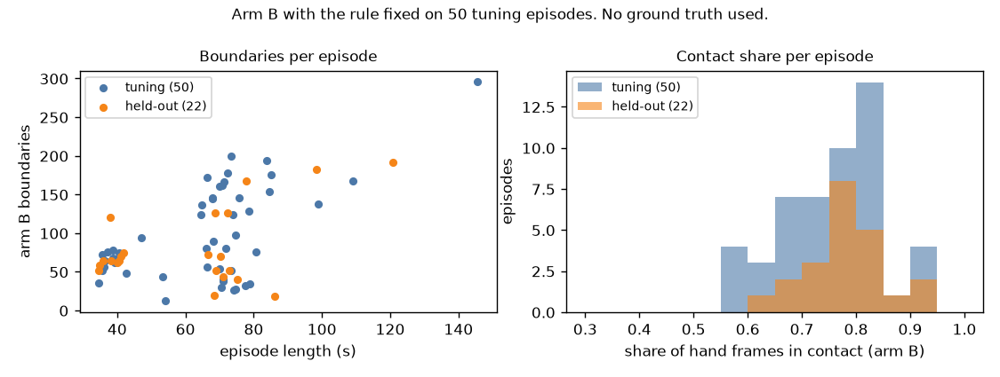
Conclusion
The held-out SAM output is complete and arm B is applied with the rule fixed on tuning. Held-out episodes are a little shorter, so arm B makes fewer boundaries per episode, and the rate per minute is close to tuning. The expected total spend drops to about $142. Next paid steps: P4 (arm A, $11.86) and P5 (arm C, $2.61 for the tuning shift, then about $23.31).
EXP-34: Arm A (Muse Spark alone) on the 22 held-out episodes (P4)
Date: 2026-10-29. Script: scripts/muse_contact.py a --split held_out --send. Raw output: out/number1/muse_a/episode_*/ (one file per call), out/number1/logs/a_held_out_send.log. Meta API cost: $12.44 (Muse Spark). Data: held-out (22 episodes), not scored.
Question
Arm A asks Muse Spark, 10 frames per call at 5 fps, whether each hand touches an object. The prompt is version 1, kept by the rule in EXP-30. The timing shift (+7 frames at the start, -7 at the end) was fixed on tuning (EXP-29). This step collects the held-out answers. Scoring waits for the final run with arm C.
Setup
693 calls, 6,817 frames. The code reads the held-out ground truth only for the number of video frames, not for any contact value.
Replies that never parse (plan section "Replies that never parse"): after the full run the same command was run once more, then a third time without --send to count what is left.
Results
Pass
Calls sent
Without an answer for every frame
Cost
First
693
1
$12.42
Second (resend)
1
0
$0.02
Third (count only, nothing sent)
0
0
$0
The one reply that needed the second pass (episode 57, frames 1740 to 1794) answered 9 of 10 frames. The resend answered all 10. No call gets the fallback ("not touching").
Cost: $12.44 against the $11.86 shown before sending (+4.9%). A call used 11,946 input tokens and 701 output tokens on average. The input side was higher than the 1,100 tokens per frame in the estimate. Arm C uses the same estimate, so its real cost may also be about 5% higher than $23.31.
Answers, without ground truth: Muse Spark marks the left hand touching in 61.8% of frames and the right hand in 79.6% (tuning episodes 0, 30, 53: 74.4% and 86.5%).
In 9 of the 22 episodes (18, 24, 27, 39, 40, 41, 42, 43, 45, all about 35 to 40 s long) the left hand is touching in at most 14% of frames. In these episodes Muse Spark marks the left hand touching once, as one run of about 2.5 s, or not at all (episode 39). The replies are well formed. In the same episodes arm B puts the left hand in contact in 51% to 86% of frames.
Over episodes and hands, the share of touching frames from arm A and the share from arm B correlate at 0.09.
Conclusion
All 693 held-out arm A calls have a parsed answer after the one resend, so the 5% limit is not reached and no fallback is used. The answers are complete for the final scoring. Arms A and B disagree most on the left hand in the nine short episodes. Which one is right is decided only by the glove in the final run. Next paid step: P5 (arm C, $2.61 for the tuning shift, then about $23.31 to $24.50 for held-out).